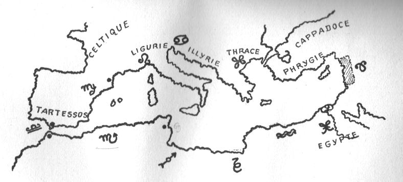
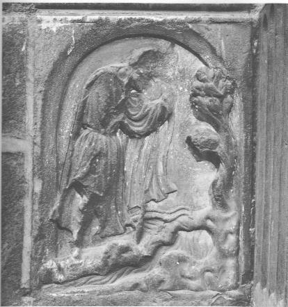

Le Livre de la Philosophie Naturelle des métaux Plan : Introduction - I. Des inventeurs qui trouvèrent cet Art - II. Où je mettrai ma peine et ma dépense... - III. Où il est parlé des Principes et des racines... - IV. Où est mise en pratique la Parole parabolique -De Messire Bernard Comte de la Marche Trévisanne.

revu le 27 juillet 2003
IntroductionBernard Le Trévisan a une réputation établie dans le monde des alchimistes. Celle d'un Amoureux de science ayant passé toute sa vie à cette quête que le commun regarde comme chimérique : la transmutation métallique par la pierre philosophale. Il y aurait beaucoup à dire là-dessus que, du reste, nous avons écrit dans d'autres sections. Quoi qu'il en soit, ce traité a été pris pour ce qu'il n'est pas : un pamphlet dans lequel Le Trévisan aurait narré ses mésaventures pendant plus de cinquante ans. Alors qu'il s'agit d'un essai crypté où il se met en lieu et place du Mercure, exactement comme Nicolas Flamel, dans son voyage à Saint-Jacques de Compostelle. Voici ce qu'écrit Jacques Sadoul [Le Trésor des Alchimistes, J'ai Lu, 1969] sur Bernard, Comte de la Marche Trévisane :
Bernard, comte de la Marche Trévisane, petit comté des Etats vénitiens, est encore appelé le Bon Trévisan et mérite assurément une mention spéciale parmi tous les Adeptes: un prix d'assiduité. Bernard commença ses travaux à l'âge de quatorze ans et il semble avoir trouvé la Pierre philosophale à quatre-vingt-deux ans passés, après une vie entière faite d'échecs répétés. On pourrait presque lui appliquer la maxime que Jules Verne met dans la bouche de l'ingénieur Cyrus Smith au début de l'île mystérieuse: " II n'est pas nécessaire d'espérer pour entreprendre ni de réussir pour persévérer ", et qu'il attribue à Guillaume d'Orange alors qu'il en était apparemment l'auteur.Ici s'arrête pour nous l'intérêt du texte de Sadoul, puisque nous avons le texte même que nous reproduisons ci-après. On trouve de nombreuses références à la Philosophie Naturelle des Métaux dans les écrits des alchimistes anciens et modernes. Dans ses Fables Egyptiennes et Grecques, Pernety cite souvent Le Trévisan, par exemple à propos de la conduite du feu :
Le comte Bernard naquit donc en 1406 dans la ville de Padoue. Son père, dès sa quatorzième année, l'initia à l'étude des maîtres alchimistes du passé, en particulier Gcber et Rhasès. Pendant ses quatre premières années de recherches, il suivit scrupuleusement la méthode indiquée par Rhasès, mais en vain; tout ce que ce labeur acharné lui rapporta fut la perte de trois mille écus. Il passa alors à Geber, ayant perdu confiance dans le premier philosophe et se remit à l'étude. Deux nouvelles années se passèrent sans autre résultat que la perte de six mille nouveaux écus. Il faut dire que tout ce que la ville contenait de souffleurs et faux alchimistes était venu « aider » le Bon Trévisan à dépenser son argent. Un moine de ses amis lui montra alors des petits traités d'obscurs souffleurs dénommés Archelaus et Rubicesca [Rupescissa] sur lesquels il se mit a travailler sans plus de succès. Un autre de ces séides prétendit qu'il fallait travailler a partir de l'alcool rectifié un nombre incalculable de fois ce que fit le Trévisan. Tous ces premiers travaux lui prirent quinze ans de sa vie et une grande partie de ses richesses sans pour autant l'avoir avancé d'un pas dans la direction du Grand Œuvre. Un bailli du pays vint alors lui dire que la matière première de l'œuvre était le sel marin.
Ce procédé ayant également échoué, le même bailli lui indiqua une autre recette qui consistait à faire dissoudre de l'argent et du mercure dans de l'eau froide. Ensuite on abandonnait à elles-mêmes pendant un an ces dissolutions faites séparément puis on les mélangeait et on les concentrait sur de la cendre brûlante. Le résidu placé dans une cornue était exposé aux rayons solaires qui devaient les faire cristalliser. Ces cristaux n'étant autres que la Pierre philosophale. Le Trévisan attendit patiemment cinq ans la formation des cristaux mais rien ne se produisit. Bernard continua avec d'autres procédés d'autres souffleurs, d'autres faux traités sans autre résultat que d'atteindre l'âge de quarante six ans, virtuellement ruiné Les huit années suivantes se passèrent en compagnie d un moine Geofroi de Leuvrier qui lui avait suggéré une nouvelle méthode à partir des œufs de poule. On calcinait les coquilles. Ensuite on séparait les blancs et les jaunes qu'on mettait a pourrir entourés de fumier dans deux tas distincts. II fallait distiller le produit un très grand nombre de fois afin d'en retirer une eau blanche d'un coté et une eau rouge de l'autre, puis répéter l'opération de façon continuelle afin d'arriver à la matière première de l'Œuvre. C'est ainsi que le bon Trevisan perdit à nouveau ces huit années-là. Ensuite en compagnie d'un théologien, il chercha à retirer la Pierre du sulfate de fer. Ce sulfate était placé dans du vinaigre huit fois distillé puis le mélange était introduit dans un alambic ou l'on procédait à quinze nouvelles distillations journalières ceci pendant un an. Bernard n'en retira pas la Pierre par contre ce travail épuisant lui fit attraper une fièvre quarte qui dura plus d'un an et dont il faillit mourir. Toujours pas découragé, le Bon Trevisan partit pour l'Allemagne ou le confesseur de l'empereur était réputé en possession du secret. Celui-ci se vantait de connaître un procédé à base de mercure, d'argent, de soufre et d'huile d'olive, qu'il disait infaillible. II fallait faire fondre au bain-marie tous ces ingrédients en remuant sans cesse puis on laissait sécher dans un verre et le matras était enfin posé sur des cendres chaudes pendant près d un mois On ajoutait du plomb à la mixture et l'on fondait le tout au creuset. D'après Maître Henri le confesseur de l'empereur, l'argent placé initialement dans le mélange — dix marcs fournis par le Bon Trévisan — aurait dû considérablement augmenter ; en fait il se trouva réduit à quatre marcs. Le comte Bernard fut alors quelque peu découragé ; on le serait à moins. Pendant deux mois il arrêta ses recherches alchimiques à la grande satisfaction de sa famille mais bientôt cette misérable soif de la Pierre philosophale qui le tenait depuis sa plus tendre enfance le reprit et il se mit à parcourir plusieurs pays d'Europe afin de chercher un véritable Adepte qui puisse l'initier, en Angleterre et Ecosse, Hollande et Allemagne, enfin France puis Espagne. De là il passa en Orient et voyaga plusieurs années en Perse, en Palestine, et en Egypte. Au retour il resta assez longtemps en Grèce où il travailla à la recherche du secret hermétique dans plusieurs monastères. Tous ses efforts restèrent vains et, à l'âge de soixante deux ans, il se retrouva à Rhodes sans argent, tous ses biens ayant été dissipés dans cette folle recherche, sans ami mais toujours persuadé qu'il découvrirait le fabuleux secret.
II apprit bientôt que résidait justement à Rhodes un religieux qui de notoriété publique possédait la Pierre. Mais pour se mettre en rapport avec un homme aussi éminent, il ne fallait pas arriver les mains vides ; le comte Bernard eut alors la chance de rencontrer un riche marchand ami de sa famille, qui lui prêta 8 000 florins. Muni de ce viatique, il fut introduit auprès du savant religieux qui lui indiqua sa propre méthode et le fit travailler sous sa direction pendant trois années. Son procédé était à base d'or et d'argent mélangés à du mercure et il se révéla bien entendu totalement improductif. Bernard retourna alors dans sa Marche Trévisane, complètement ruiné et ignoré par tous les membres de sa famille qui le tenaient pour un dément et refusèrent même de le recevoir. Enfin à l'âge de quatre vingts ans, il décida de tout reprendre au début et de réétudier Geber qu'il supposait avoir mal compris. II retourna alors une dernière fois à Rhodes qu il ne devait plus quitter jusqu'à sa mort en 1490. Selon la tradition alchimique, c'est là à quatre vingt deux ans, que le Bon Trévisan réussit enfin la Pierre phiîosophale. Il vécut ainsi les trois dernières années de sa vie en possession du merveilleux secret. Par ailleurs il avait acquis une sereine philosophie dont il nous fit part dans ses écrits sa conclusion était que l'homme doit savoir se contenter de ce qu'il a.Des ouvrages alchimiques qu il rédigea les plus connus sont le Traité de la philosophie naturelle des métaux et La Parole délaissée. Ce dernier est d'accès particulièrement aisé pour nous puisque Claude d'Ygé eut l'excellente idée de le reproduire dans son ouvrage Nouvelle assemblée des Philosophes Chymiques. Dans le premier traité cité, la Philosophie naturelle des métaux se trouve un texte connu sous le nom de l'Allégorie de la Fontaine où Bernard le Trevisan expose de façon symbolique les opérations relatives à une des trois parties du magistère. [...]
« Mais le Trévisan nous conseille de donner un feu lent & faible plutôt que fort, parce qu’on ne risque alors que de finir l’œuvre plus tard, au lieu qu’en forçant le feu, on est dans un danger évident de tout perdre. » [Des Poids dans l'Oeuvre]
Ce que les alchimistes appellent « brûler les fleurs ». Cela survient lorsque la provision vitreuse [Canseliet] est trop chauffée et que l'une des natures métalliques se sépare du « verre » et tombe en culot au fond du creuset [cf. aventurine]. Autre exemple, peu abordé par les alchimistes, la quantité des éléments mis en présence :
« quelques uns nous avertissent (Le Trévisan.) que la Nature a toujours la balance à la main pour peser ces éléments, & en faire ses mélanges tellement proportionnés, qu’il en résulte toujours les mixtes qu’elle se propose de faire, à moins qu’elle ne soit empêchée dans ses opérations par le défaut de la matrice où elle fait ses opérations, ou par celui des semences qu’on lui fournit, ou enfin par d’autres accidents. » [Des poids dans l'oeuvre]
C'est une notion de chimie moderne qu'il est singulier de trouver dans un texte sur l'alchimie. Ainsi, avant Lavoisier, certains Adeptes avaient clairement la notion que les substances à mixer devaient être proportionnées. Il semble que les lieux géographiques cités par Le Trévisan soient des termes cryptés pour désigner les signes du zodiaque. Nous reviendrons plus bas là-dessus. Par ailleurs, la Fontaine du Trévisan a plusieurs fois été prise comme allégorie, tels Hermès dans ses Sept Chapitres, Synesius et Nicolas Flamel [Figures Hiéroglyphiques]. Outre que Jean de Meung y consacre son traité, intitulé la Fontaine des Amoureux de science. Que cache donc cette fontaine ? C'est Ripley qui l'a le mieux exprimé dans ses Douze Portes :
« Notre art produit l’eau de la terre, & l’huile du rocher le plus dur. »
L'eau de la terre, c'est l'eau salée mais, évidemment ce n'est pas de l'eau de mer. Il s'agit d'un sel que Basile Valentin a appelé « l'eau seiche qui ne mouille point les mains » et qui a des propriétés bien particulières : pouvoir minéralisant, capable de transformer une substance amorphe en une substance cristalline ; pouvoir de maintenir en dissolution des substances qui auraient dû se volatiliser depuis longtemps, c'est l'eau permanente des Sages. quant à l'huile, il s'agit du principe de teinture ou Soufre rouge. L'association de l'eau de la terre et de l'huile du rocher forme le Lait de Vierge, dont Fulcanelli et E. Canseliet ont beaucoup parlé. Louis Figuier [L'Alchimie et les alchimistes, Paris, 1860] ne nous apprend rien de plus : il cite l'aventure du bon Trévisan qui parcourut successivement l'Espagne, l'Angleterre, l'Ecosse, la Hollande, l'Allemagne et la France. Puis, il alla vers l'Orient, en Egypte, Perse et Palestine. Il s'attarda en Grèce et travailla longtemps à Rhodes où habitait un « grand clerc et religieux ».
Il est étrange d'observer que comme Bernard Le Trévisan, Denis Zachaire a écrit une relation dans laquelle, lui aussi nous narre ses mésaventures et avatars divers. Lui aussi finit par trouver un abbé qui lui donne encouragements et conseils [voir Cambriel où nous relatons tout cela]. Et comme Le Trévisan, Zachaire écrit un traité intitulé La vraye Philosophie naturelle des métaux, daté de 1612, le traité de Bernard datant de 1567. La liaison entre Trévisan et Zachaire semble s'établir par le biais de Cyliani qui écrit :« Je ne décrirai point ici des opérations très curieuses que j'ai faites, à mon grand étonnement, dans les règnes végétal et animal, ainsi que le moyen de faire le verre malléable, des perles et des pierres précieuses plus belles que celles de la nature en suivant le procédé indiqué par Zachaire et se servant du vinaigre et de la matière fixée au blanc, et de grains de perles ou de rubis pilé très fins, les moulant puis les fixant par le feu de la matière, ne voulant pas être parjure et paraître ici passer les bornes de l'esprit humain. » [Hermès Dévoilé, c. 1831]
La question du verre malléable a été abordée dans le commentaire de l'Atalanta Fugiens. Elle est du plus haut inérêt pour ce qui concerne la connaissance du Soufre blanc. Voyons à présent en quoi les pays qu'a traversés le Trévisan sont intéressants du point de vue de l'hermétisme. Ils sont liés, en effet, aux signes du zodiaque et aux dignités planétaires, comme le rapporte Claude Ptolémée, dans son Tetrabiblon [Le Livre unique de l'Astrologie, Pascal Charvet, Nil Editions, 2000]. Voici, dans le tableau suivant quelles sont les correspondances à établir entre les pays et les signes du zodiaque :
pays signe zodiacal planète Bretagne - Gaule - Germanie Bélier2 Mars Perse - Cyclades - Chypre Taureau3 Vénus Arménie - Cyrénaïque Gémeaux Mercure Carthage - Afrique - Phrygie - Colchide Cancer Lune Italie - Sicile - Chaldée Lion Soleil Babylonie - Grèce - Crète Vierge4 Mercure Bactriane - Thébaïde Balance Vénus Mauritanie - Syrie Scorpion Pluton Espagne - Celtique Sagittaire1 Jupiter Sarmatie - Ethiopie Verseau Saturne Phasanie - Lydie - Pamphylie Poissons Jupiter
Rien ne dit, évidemment, que ce tableau établi d'après les données de Ptolémée soit conforme à celles de la tradition hermétique. Voyons ci-dessous notre zodiaque revu par notre hypothèse du quaternaire, concernant les triangles zodiacaux qui définissent les quatre éléments :

FIGURE I
(triangles du quaternaire zodiacal)Le voyage du Trévisan commence par un signe de feu, au Sagittaire. Il se poursuit par le 2ème signe de feu, le Bélier. Puis, par un signe de terre, le Taureau. Enfin, par un signe d'eau, la Vierge. A noter que le passage dans les pays d'Orient est toujours teinté de Saturne. Un fait, en tout cas, est notable. C'est le rapport à Rhodes. Car c'est dans cette ville [île] que vient se fixer Le Trévisan. Or, Rhodes, selon les textes est le lieu où tombent les pluies d'or, au moment de la naissance de Minerve [Pallas-Athéna]. Pour un examen détaillé de cette fable, voyez l'Atalanta, XXIII. Quoi qu'il en soit, il n'est pas douteux que, par cabale, l'union de Gabricius et de Beja ne se produise dans Rhodes. En définitive, il est possible que les voyages du Bon Trévisan soient aussi peu réels que le voyage initiatique de Nicolas Flamel ou que celui de Denis Zachaire. Ce voyage serait du même ordre que celui d'Hercule, qui passe par les quatre points cardinaux au cours de ses Douze Travaux [point déjà mis en exergue par Jung]. Notez que le système de Ptolémée n'est pas le seul, qui propose une relation entre les pays et les signes du zodiaque. Un astrologue, aujourd'hui disparu, Alexandre Volguine, avait traité de ce point de science dans son journal [Journal d'un astrologue, Niclaus, 1957]. Au sein du fatras de correspondances zodiacales des villes et des pays, Volguine a trouvé les points suivants, qu'il a rapporté dans son Journal :
- la Judée et la Syrie sont gouvernées par le Bélier ;
- la Lydie, l'archipel grec et la Crête par le Taureau ;
- Athènes, par les Gémeaux ;
- l'Italie et la Sicile, par le Lion ;
- Alexandrie, par les Poissons ;
- Paris, Lyon et Toulouse par la Vierge [ceci est particulièrement intéressant dans le cas du récit de Denis Zachaire] ;
Volguine aboutit au tableau suivant :

FIGURE II
(le zodiaque géographique)On ne saurait, évidemment, attribuer un crédit excessif à ce genre de supputation, surtout quand c'est un astrologue qui la propose, car on sait la part énorme d'auto-suggestion propre à tout astrologue et qui est, pour ainsi dire, consubstancielle à son art de l'interprétation. On voit que, dans ce système, le Bélier est à l'Orient et la Balance à l'Occident...Voyons à présent ce que nous trouvons chez les auteurs modernes, sur la Philosophie Naturelle des Métaux. Fulcanelli cite Le Trévisan plusieurs fois dans le Mystère des Cathédrales :
« Celui [un bas-relief] du pilier gauche nous présente l'alchimiste découvrant la Fontaine mystérieuse que le Trévisan décrit dans la Parabole finale de son livre sur la Philosophie naturelle des Métaux [Cf. Mangin de Richebourg, Bibliothèque des Philosophes Chimiques, Paris, 1741, t. II, traité VII] » [Myst, p. 94]

FIGURE III
(La Fontaine mystérieuse au pied du Vieux chêne, in Mystère des Cathédrales)Ce bas-relief donne l'impression de l'Artiste ayant vaincu un monstre que l'on trouve inanimé à ses pieds. Une onde semble sourdre du pied du chêne, semblable en cela à celle que nous présente Nicolas Flamel dans le Livre d'Abraham Juif. Fulcanelli cite encore Le Trévisan, mais pour son Verbum dimissum, déjà annoté. A la page 118, l'Adepte cite encore l'alchimiste, en liaison avec l'allégorie de la Fontaine et poursuit sur le concept d'Aimant et d'Acier :
« Il dit que cet acier se trouve dans Ariès, qui marque encore le commencement du Printems, lorsque le soleil parcourt le signe du Bélier [...] » [in la Clef du Cabinet Hermétique]
Epoque, en effet, où l'on peut, par un pur effet de cabale, capter le Soufre du vitriol romain. C'est là où tant d'alchimistes dérapèrent, à commencer hélas ! par Newton qui n'y vit que la stibine vulgaire en lieu et place du stibium de Tollius...Fulcanelli revient une dernière fois sur Le Trévisan, et toujours à propos de l'allégorie de la Fontaine, en un passage où l'on aurait peine à ne pas deviner sous les traits du prêtre vieux et sage, celui que Trévisan ne manqua point de trouver à Rhodes :
« L'allégorie se rapproche beaucoup du texte parabolique de Bernard Trévisan, où le " prestre ancien et de vieil âge " se montre si bien instruit des propriétés de la fontaine occulte, de son action sur le " roy du pays " qu'elle aime, attire et engloutit » [Myst, p. 130].
La Philosophie Naturelle des Métaux est citée par Eugène Chevreul, dans son Résumé de l'Histoire de la Matière [cf. idée alchimique, II]. Voici en particulier un passage qui en dit long sur le respect qu'avait Chevreul pour Le Trévisan :
« Je ne veux point exagérer le mérite de Bernard, comte de la Marche Trévisane, en lui faisant dire quelque chose de précis, quand il y aurait à interpréter ou même à corriger peut-être ce qu'il a avancé ; mais, en prenant sa pensée à la lettre, il y a une élévation d'idées sur la conception de la combinaison chimique qui me paraît supérieure à celle qu'on pourrait lui comparer, soit en prenant ceux qui l'ont précédé et ceux qui l'ont suivi, tels que Becher et même Stahl, relativement à ce que ceux-ci ont dit de l'existence de plusieurs sortes de composés »
On trouve encore des références au traité dans la Toyson d'Or de Salomon Trismosin :
« Ce gentil messager des dieux, mercure, plein d'inventions et de subtilités ainsi tourné de toutes parts, s'est acquis force lustre, duquel il fait librement et largement égale portion à ses associés et plus proches voisins ; comme à Vénus, à laquelle il donne une blancheur, à Jupiter trop violent il modère et diminue les forces, rend Saturne endurci, et fait que Mars s'amollisse, donne à la Lune une couleur citrine, et résout tous les corps en une parfaite eau, de laquelle on épuise la vraie source d'une admirable vertu ; ce que le Trévisan déclare ouvertement en la pratique de son livre de la Philosophie naturelle des métaux, de sorte qu'il nous suffira d'envoyer les lecteurs à ce qu'il en décrit pertinemment, sans nous y arrêter plus longtemps. »
Voyez encore le Verbum Dimissum et le Songe Verd, deux traités attribués à Bernard Le Trévisan. Notez que le Verbum [in Trois Traitez de la Philosophie naturelle (Paris, Jean Sara,1618)] semble antérieure à la Philosophie, etc. [in Bibliothèque des Philosophes chimiques, T. II, Paris,1741].
L'un des points de symbolisme les plus importants soulevé dans ce traité est le feu d'écorce, dont nous n'avons trouvé nul équivalent ailleurs et qui permet de donner un sens précis à l'une des maximes célèbres des Adeptes : « DEALBATE LATONAM ET RUMPIRE LIBROS ».
PREFACE
En invoquant le Nom de Dieu, sans lequel nulle aide est faite : car tout bien vient premier de lui, et vient à l'Ame de bonne volonté, et à l'Homme de [mauvaise] volonté et traître, Jamais n'y entrera Sapience, ni aide ne lui sera faite.
Afin que tant d'Inquisiteurs de cette précieuse Science et vénérable Art, soient réduits de ténèbres à lumière, [allusion au traité anonyme la Lumière venant par soi-même des Ténèbres] et qu'ils laissent tant de voies transverses, auxquelles n'y a nul profit, par quelque manière que ce soit, ni par labeur qu'on y puisse mettre ; moins par tant de dépense que l'on y puisse faire, jamais on y trouve profit, ni aucune apparence de vérité. Donc, afin que ce digne Art ne soit tant foulé par les Décéveurs et Sophistiques, et que les Inquisiteurs goûtent des fruits de cette Science, appareillée pour eux et ceux qui sont ses Fus, et en suivent le grand chemin que Nature tient en toutes ses Créations, Opérations et Compositions, et qu'ils puissent être informés, tant en Spéculative qu'en Pratique, par raison nécessaire et approuvée par vraie expérience que j'ai touchée de mes mains et vue de mes yeux. Car quatre fois j'ai composé la benoîte Pierre, qui est vilipendée par les Ignorants, cuidant les uns être impossible, les autres qu'elle soit tant difficile de faire, que jamais nul n'y puisse parvenir; et plutôt se transversent es voies obliques, et dépendent leurs biens et ceux d'autrui par les Réceptes et Livres Sophistiques, comme Geber, Archelaüs, Rasis [1, 2, 3, 4, 5, liste non limitative], la Sémite d'Albert le Grand, la Tramite d'Aristote, le Canon de Pandecta, la Lumière de Rasis, l'Epitre de Démophon, et la Somme grande Testutale, et autres infinis Livres Erratiques, et errants, faisant dépendre infinies pécunes et biens, et à la fin jamais on ne trouve rien en ces Livres. Et aussi tant de Réceptes Sophistiques et tant de Régimes pénibles, frais et grands dépens que les Décéveurs font, tant que partout la benoîte Science est trouvée pour trouffe. Et les Ignorants en commun vulgaire disent ainsi : Comme ils ont été trompés, ils veulent tromper les autres, et c'est une sotte raison : Car un Sage désire faire faits et choses, qu'après il ait perpétuelle louange. Comment donc voudraient-ils mettre mensonges, lesquels ne pourraient être par nulle raison naturelle ? Mais les Ignorants, s'ils n'entendent la première fois un Livre, us en disent mal, et ne le veulent plus relire; pourquoi guère de gens n'y viennent : Car mieux vaudrait la seule imagination d'une bonne Intelligence de quelconque, mais qu'il connût un peu les Principes de la Nature métallique, et plutôt viendrait à la fin, que par tant de Livres à les lire, sans y prendre goût pour les entendre.
Et pour ce, afin que je puisse faire un bon Traité et bref, et ensuivre la congrégation des Sages, qui ont bien parlé en cette Science ; et aussi que par mon Livre les Disciples puissent être bien informés, tant en Théorique qu'en Pratique et en Opération; je diviserai mon Livre en quatre Parties.
En la première, je veux parler des Inventeurs de cette digne Science, et des Sages qui l'ont eue, comment et selon que je l'ai sue.
En la seconde Partie, je parlerai de moi-même, de mon temps, et comment, depuis le commencement jusqu'à la fin, je l'ai sue, et comment je fis du tout et partout. Sans aucune envie, les labeurs que j'ai eus en la poursuivant.
En la troisième Partie, je veux parler des Principes et Racines des Métaux, et mettre raisons évidentes et philosophales.
En la quatrième Partie de mon Livre, je veux parler de la Pratique, laquelle je mettrai un peu Parabolique ; mais non pas tant, qu'en y mettant peine, tu ne l'entendes bien.
Et par les autres Parties tu pourras être instruit merveilleusement : Et si tu n'entends l'Œuvre par mon Livre, vraiment je crois que jamais tu ne viendras à cet Art. Mais ne pense pas l'entendre à la deuxième, ni à la troisième fois, ni à la dixième fois; mais toujours plus l'entendre en le répétant : Et je ne dis rien en mon Livre, que je ne prouve par raisons et expériences évidentes; et aussi par l'autorité des Maîtres, parlant en cet Art et Science très raisonnablement et par grande raison. [Voilà ce qui arrête les curieux plus avides de résultats que de science. Comme nous l'avons dit ailleurs, les textes se défendent eux-mêmes et, si l'on n'a pas la forme d'esprit idoine, ils resteront muets et fermés. Ce qui ne veut pas dire qu'ils soient ésotériques. Fulcanelli a assez fait voir que l'alchimie - telle que nous la défendons ici - est une science positive et complète ; celle par laquelle on fait FEU et TERRE d'un Mixte fait d'AIR et d'EAU.]
Un Homme y devrait mettre peine et y travailler : Car par cet Art et Science l'on peut éviter toute peine et maudite pauvreté : Car pauvreté tue non seulement le Corps, mais l'Esprit, et l'Ame, et la vie, et toute force, sens et entendement. Aussi cette Science guérit de toute maladie quelle qu'elle soit, corporelle ou spirituelle, es Hommes subitement ; de sorte que la Nature ait substantation. Comme moi-même l'ai, en mon Dieu, expérimenté en plusieurs Ladres, Caduques, Hydropiques, Ethiques, Apoplectiques, Iliaques, Démoniaques, Insensés, et Furimonds, et autres quelconques maladies, qui seraient longues à narrer, et pas ne le cuideroye, si vu ne l'eusse et fait.
Aussi la devrait-on aimer : Car, par cet Art, on peut avoir tous les autres Arts et Sciences. Il administre les nécessités pour la vie : là ou autrement on y a grand peine, et on n'y peut vaquer à l'esprit étudiant. Item, Cet Art et Pierre, vraiment composée, orne l'Ame de toutes vertus [à moins que le lecteur ne s'en soit rendu compte, cela fait déjà depuis dix lignes que Trévisan s'exprime par cabale, car les termes CORPS, ESPRIT et ÂME ont un sens crypté, que l'on peut traduire, à force d'études, par leurs sens vulgaires, ceux des substances chimiques tant convoitées.] : Et peut-on faire plusieurs aumônes, par lesquelles on peut avoir sainteté et salut de l'Ame, et faire les œuvres de Miséricorde; comme racheter les Captifs, subvenir les Veuves et pauvres Orphelins, et guérir les pauvres Malades. On y devrait bien prendre peine : Car à étudier en Lois, en Décret, en Théologie, en Médecine, ou apprendre un Art Mécanique, un Homme est bien six ou sept ans : Et en cette précieuse Science, on n'y veut mettre qu'un mois, ou cinq ou six. Hélas ! Toutes les autres ne sont rien au regard d'elle. Elle est tant aisée, que si je te le disais, ou montrais l'Art par effet, à peine le pourrais-tu croire ni entendre, tant est facile; mais il y a un peu de peine pour entendre nos mots, et d'en savoir la vraie intention.
Le premier Inventeur de cet Art (comme on lit es Faits de mémoire, et aux Livres des Gestes anciennes, et au Livre Impérial, et en l'exposition de Clavetus [il doit s'agir de Gaston Claves] sur la Table d'Emeraude, et es autres Livres) ce fut Hermès le Triple ; Car il sut toute triple Philosophie naturelle, savoir Minérale, Végétale et Animale [on n'a pas pris assez garde du sens de ces trois mots : lorsqu'on dit que la pierre est animale, il faut y voir l'anima latin, c'est-à-dire l'Âme ; végétale, c'est-à-dire que sa croissance, sa formation exigent une sorte de poupinnière, qui est le Mercure, agent supérieur de minéralisation. Enfin, minérale, dans le sens où elle est cristalline] : Et pour ce qu'il fut Inventeur de l'Art, nous l'appelons Père, ainsi comme en tous les Livres de la Tourbe, d'Hermès avant Pythagore en est parlé, que quiconque aura cette Science, il est appelé son Fils. Cet Hermès-ci fut celui-là de qui est écrit en la Bible, qui après le Déluge entra en la Vallée d'Ebron, et là trouva sept Tables de Pierre de marbre [voyez ce qu'on en dit dans l'histoire de la « découverte » de la Tabula Smaragdina. Il y a là une allusion aux Sept Traités d'Hermès. Et comme il y avait, avant, sept métaux connus, il y a sept Tables, outre que le chiffre 7 est consacré à Apollon, c'est-à-dire au Soufre rouge], et en chacune des sept Tables, était imprimé un des sept Arts Libéraux en Principes; et furent insculpées ces Tables avant le Déluge, par les Sages qui étaient alors. Car ils savaient que le Déluge [1, 2, 3, 4, 5,] viendrait sur toute la Terre, et que tout y périrait : et afin que les Arts ne périssent, ils les inscrirent en ces Pierres de marbre. Ledit Hermès seulement trouva lesdites Tables, lesquelles sont le fondement de tous les Arts et Sciences. Et cet Hermès-ci fut devant la loi ancienne. Mais il y eut moult de Gens en ce temps-là qui surent cette Science : Et dit Aros, en son Livre, qu'il écrit au Roi de Meffohe, qu'au temps de la donation de la Loi ancienne au Désert, auprès de la Montagne Sinai, cette Science fut donnée et révélée à aucuns des Enfants d'Israël, à décorer et parfaire l'œuvre du Temple, et l'Arche [1, 2, 3, 4, 5,] de l'ancien Testament ; comme il est écrit en Ezéchiel le Prophète, et en Daniel, et au Livre de Joséphus.
Et ainsi l'Œuvre a été donnée de Dieu à aucuns, comme j'ai dit. Les autres l'ont trouvée comme par nature, sans Révélations ni Livres quelconques, ni Expérience; comme la Phitomée, Rébecca, Salomon, Ambadagésir, et Philippe Macédonien. Mais Hermès, après le Déluge, fut le premier Inventeur et Probateur de cette Science de Philosophie, et trouva lesdites Tables en la Vallée d'Ebron, là où Adam fut mis, étant chassé du Paradis Terrestre [par cabale, le Jardin des Hespérides, cf. Matière -]. Et après Hermès vint-elle par lui à d'autres infinis. Et ledit Hermès en fit un Livre, qui dit ainsi.
C'est vraie chose et sans mensonge, et très certaine, que le haut est de la nature du bas, et le montant du descendant. Conjoints-les par un chemin et par une disposition. Le Soleil est le Père, et la Lune blanche est la Mère, et le Feu est le Gouverneur [il ne s'agit pas du feu vulgaire mais du FEU élémenté. C'est, selon les alchimistes, une eau ignée ou un feu aqueux. D'une certaine façon, le résultat de l'action de ce feu tient tout à la fois de la lave et de la glace. C'est pourquoi Fulcanelli et E. Canseliet ont tant parlé de l'allégorie du Rémore et de la Salamandre, en citant De Cyrano Bergerac - ]. Fais le gros subtil, fais le subtil épais, ainsi tu auras la gloire de Dieu. Voici tout ce que dit Hermès en ce Livre-là. Ce Livre-là est bien bref; mais toutefois ce sont grands mots, et toute l'Œuvre y est écrite.
Le Roi Calid [l'un des plus grands adeptes. Les Entretiens de Morien au roi Calid sont, hélas, introuvables...Nul doute que bien des choses y soient dites, et peut-être, de manière exotérique -] l'a eu moyennant Bendégid le Ternaire, et son Fils, Aristote, Platon, et Pythagores, qui est le premier appelé Philosophe, qui fut Disciple d'Hermès, et fit une Congrégation, là où il y'en a plusieurs qui l'appellent Le droit Livre du Code de toute vérité [autre nom de la Tourbe des Philosophes, qu'il faut lire Assemblée et non tourbe, bien que la marga latine ne soit pas étrangère à l'oeuvre -]. Car la vérité y est sauve, aucune superfluité ni diminution, combien qu'il soit obscur aux lecteurs. Alexandre l'a eu, qui fut Roi de Macédoine et Disciple d'Aristote [Alexandre est cité bien des fois par les Adeptes. Lambsprinck y fait allusion : « Alexandre écrit de Perse, etc. » in De Lapide Philosophorum -]. Item, Avicenne [35 références] qui aussi bien en parle, et Galien [14 références] et Hypocrate [16 références]. Et en Arabie cette Science a été connue de plusieurs, comme du Roi Haly, qui était souverain Astrologien, et l'enseigna à Morien, et Morien à Calib, Roi d'Arabie : Et Aros l'a eu, et l'enseigna à Néphandin son Frère; et Saturne à Luncabur et à son Extraction, et à sa Sœur Madéra. Et infinis Gens l'ont eu en Arabie. Plusieurs Gens l'ont eu, et ont fait plusieurs Livres sous paroles métaphoriques et sous figures, en telle manière que leurs Livres ne peuvent être entendus, fors que par les Enfants de l'Art. Tellement que je dis bien, que les Disciples, par tels Livres, sont dévoyés plutôt qu'adressés à la droite voie; et la cachent et mussent plus par leurs Livres qu'ils ne la révèlent.
Aussi en France plusieurs l'ont eu, comme l'Escot, Docteur très subtil. Maître Arnaud de Villeneuve, Raymond Lulle, Maître Jean de Meung, l'Hortolan, et le Véridique : Et une grande multitude d'autres partout l'ont su. Mais voyant par ces Livres tant de damnations et désespérations, qui viennent aux Etudiants, ai voulu labourer pour mieux à mon pouvoir et petit engin les pourvoir, afin qu'eux prient Dieu pour moi.
OU JE METTRAI MA PEINE ET DEPENSE DEPUIS LE COMMENCEMENT JUSQU'A LA FIN, SELON VERITE.
Le premier Livre que je lus fut Rasis, là où j'employai quatre ans de mon temps, et me coûta bien huit cents écus en l'éprouvant; et puis Geber, qui m'en coûta bien deux mille et plus, et toujours avais Gens qui m'aflamboient pour me détruire. Je vis le Livre d'Archélaus par trois ans, là où je trouvai un Moine, où lui et moi labourâmes par trois ans, et es Livres de Rupescissa [19 références], et au Livre de Sacrobosco avec une Eau de vie rectifiée trente fois sur la lie, tant qu'en mon Dieu nous la fîmes si forte, que nous ne pouvions trouver voirre qui la souffrît pour en besogner, et y dépendîmes bien trois cents écus.
Après que j'eus passé douze ou quinze ans ainsi, que j'eus tant dépendu, et rien trouvé, et que j'eus expérimenté infinis Receptes, et de toutes manières de Sels en dissolvant et congelant, comme Sel commun, Sel armoniac, de Pin [allusion détournée au bois de chêne, cf. Choses Naturelles et Surnaturelles], Sarracin, Sel métallique, en dissolvant et congelant, et calcinant plus de cent fois par bien deux ans : en Alums de Roche [l'un des sels les plus importants de l'oeuvre, le seul qui soit effectivement, avec le salpêtre roche et non roche. Il contient Pégase et Chrysaor - ], de Glace, de Scaiole, de Plume [1, 2, 3, 4, 5, 6, 7, 8, 9, 10,]; en toutes Marcassises [15 références], en Sang, en Cheveux, en Urine, en Fiente d'Homme, en Sperme, en Animaux et Végétaux, comme Herbes; et après en Coperoses [1, 2, 3,], en Atramens, en Œufs, en Séparation des Eléments, en Athanor par Alambic et Pélican, par Circulation, par Décoction, par Réverbération, par Ascension et Descension, Fusion, Ignition, Elémentation [c'est-à-dire en résolvant les métaux en leur humide radical], Rectification, Evaporation, Conjonction, Elévation, Subtiliation [1, 2, 3, 4, 5, 6,], et par Commixtion, et par infinis autres Régimes sophistiques : Et y fus en toutes ces opérations bien douze ans; tellement que j'avais bien trente-huit ans, que j'étais après l'extraction du Mercure des Herbes et des Animaux : tant que j'y dépensais, tant par Trompeurs, que par moi, pour les connaître, environ six mille écus.
Après, toujours cherchant, je commençais à perdre courage, mais toujours je priais Dieu qu'il me donnât grâce de parvenir à cette Science. Il advint qu'il vint un Lai, Bailli de notre pays, qui voulut faire la Pierre de Sel commun [29 références] et le dissolvait à l'Air, puis le congelait au Soleil, et faisait des autres choses beaucoup, qui seraient longues à raconter, et en cela nous persévérâmes un an et demi, et rien ne fîmes, car nous ne besognions pas sur Matière due. Et comme dit la vénérable Tourbe, appelée le Code de toute vérité, on ne peut trouver en la chose ce qui n'y est pas. Mais, comme il est tout clair, au Sel commun n'est pas la chose que nous quérons, et nous vîmes bien par quinze fois que nous recommencions, et n'y voyons nulle altération de la nature, et par ainsi nous laissâmes ce dit Ouvrage.
Et puis nous vîmes des autres, qui faisaient de très bonne Eau forte [43 références] pour vouloir dissoudre très bon Argent fin, et Cuivre et autres Métaux, et dissolvaient en un Vaisseau Argent fin, et Argent vif en un autre, et tout avec une même Eau et bien violente, et les y laissaient par douze mois, et puis prenaient les deux Fioles, et les mettaient en une; Et alors us disaient que c'était mariage du Corps et de l'Esprit [dans l'oeuvre, il est d'usage de faire le mariage d'abord entre l'Âme et l'Esprit. Ce n'est qu'après, lorsqu'on est parvenu à l'époque du Sagittaire, que l'on décoche la flèche de rayon igné en direction du Corps -]. Puis mettaient dessus cendres chaudes [que l'on saisisse bien qu'avant le retour des cendres, il faut que le combat ait lieu entre le dragon et l'Artiste], et faisaient évaporer la tierce partie de l'Eau forte; et ce qui nous restait, nous le mettions en une Cucurbite triangulaire bien étroite [on mêle en un triple Mixte l'ESPRIT, l'ÂME et le CORPS]; et le Vaisseau, nous le mettions au Soleil, et puis à l'Air, tant qu'us disaient se créer petits Lapils cristallins, fondants comme cire, et congelés [on voit comment il est facile à un alchimiste de la virtuosité de Bernard e Trévise d'être tout à la fois charitable et envieux. Envieux parce qu'il semble dire le vrai pour le faux ; charitable parce qu'il annonce les pierres cristallines, gemmes et escarboucles qui ne disent pas leur nom ni leur qualité -]. Et disaient que c'était Pierre au blanc, et que celle du Soleil, ainsi faite, était au rouge [c'est nommer les Elixirs au blanc et au rouge. Les vrais Amoureux de Science savent que l'élixir n'a pas le pouvoir de transmutation qu'on lui prête, mais qu'il a un rôle de transformation tout à fait analogue, par la présence de certains agents, à ce qui se passe dans la nature lorsque des roches trapéennes viennent à être en contact avec des roches calcaires -]. Et nous en fîmes en cette manière jusqu'à vingt-deux Fioles, toutes à demi pleines ; et ils nous en donnèrent trois. Et nous attendîmes par cinq ans que ces Pierres cristallines se créassent aux fonds des Fioles [c'est, en principe, le résultat attendu dont l'Artiste n'est pas frustré s'il a duement appliqué le calorique]; et à la fin ne trouvâmes rien de notre intention, et ne le ferions jamais : Car (comme dit la vénérable Tourbe) Nous ne voulons rien étrange en notre Pierre; mais d'elle-même se parfait-elle, et parachève en son unique Matière métallique. Tant que j'avais bien quarante-six ans et plus.
En après nous, avec un Docteur Moine de Cisteaux, nommé Maître Geoffroi le Leuvrier, voulûmes à son intention faire la Pierre : Car nous savions bien que toute autre chose que la seule Pierre était fausse, et par ainsi nous ne cherchions que la seule Pierre, et savions bien que c'était la vérité. Et voici ce que nous fîmes. Nous achetâmes des Œufs de Céline deux milliers, et nous les cuisîmes en eau, jusqu'à ce qu'us fussent bien durs; puis nous séparâmes les coques à part, et les aubins et les rouges à part, et calcinâmes les coques jusqu'à ce qu'elles fussent blanches comme neige; et les aubins et les rouges nous les pourrîmes tout par eux en fient de Cheval; et puis les distillâmes trente fois, et en tirâment Eau blanche, et puis Huile rouge à part, et Finalement nous fîmes choses qui seraient longues à dire, et en la fin nous ne trouvâmes rien de ce que nous demandions, et y persévérâmes deux ans et demi, à tant que par désespérations nous laissâmes tout; car aussi ne besognions-nous pas de Matière due. Nous demeurâmes, mon Compagnon et moi, et y apprîmes à sublimer les Esprits, et à faire l'Eau forte, dissoudre, distiller et séparer les Eléments, et à faire Fourneaux, et Feux de maintes manières; et fûmes bien huit ans en ces Opérations.
Enfin, après vint un Théologien, grand Clerc, qui était Protonotaire de Bergues, et avec lui nous voulûmes besogner, et faire la Pierre, laquelle us voulait faire avec une seule Coperose. Et premier, nous distillâmes de bon Vinaigre huit fois, puis nous mettions la Coperose là-dedans, premièrement calcinée par trois mois, puis en tirions et y remettions le Vinaigre, et la Coperose demeurait au fond, et puis nous remettions le Vinaigre, puis tirions et remettions, et le faisions ainsi chaque jour quinze fois; tellement que j'en eus les fièvres quartes par quatorze mois, et en cuidai mourir; et laissâmes tout par un an, et ne trouvâmes rien; car nous besognions sur Matière étrange. [ce sont des éléments du récit que l'on donne toujours en exemple des avatars qui ne manquent pas d'arriver aux alchimistes toqués de pierre philosophale et qui font, selon l'expression de Nicolas Flamel, « mille brouilleries ». On ne s'est pas assez aperçu de ce que ces récits - selui de Denis Zachaire - sont en fait cryptés et donnent des indications là où l'on croit lire un récit banal - Cyliani, dans son Hermès Dévoilé, ne s'exprime guère autrement, cf. St Grégoire-sur-Vièvre -]
En après, vint un Homme, gentil Clerc, et nous dit que le Confesseur de l'Empereur savait de certain la Pierre, lequel on appelait Maître Henri. Et alors nous allâmes devers lui, et dépendîmes bien deux cents écus avant que d'avoir eu la connaissance de lui : Et bref, par grands moyens et grands Amis, nous eûmes son accointance. Et voici comme il faisait. Il mettait Argent fin avec Argent vif, et puis il prenait du Soufre et de l'Huile d'Olives, et fondait tout ensemble sur le feu, et le Soufre se fondait avec l'Huile, et puis le cuisait, tout à petit feu, dans un Pélican, bien fort luté de deux doigts d'en haut, tout vêtu de Lut fort, et avec un bâton incorporions le tout ensemble, et notre Matière jamais ne se voulait prendre, ni bien mêler [le pélican est l'animal consacré à Mercure parce qu'il nourrit ses petits de sa propre substance]. Et quand nous eûmes bien mêlé tout par bien deux mois, nous le mîmes dans une Fiole de verre lutée de bonne argile, et puis le desséchâmes, et le mîmes en cendres chaudes par longtemps, et faisions feu tout à l'entour de la Fiole, jusqu'au près de la bouche, et nous disions qu'en quinze jours ou trois semaines, par la vertu du Corps et du Soufre, us se convertiraient en Argent. Et après le temps de notre Décoction, il mettait en la Fiole du Plomb, selon qu'il lui semblait, et fondait tout à fort feu, et puis le tirait et faisait affiner. Alors nous devions trouver notre Argent multiplié de la tierce partie. Et à celle Œuvre je mis pour ma part dix marcs d'Argent; et les autres y en avaient mis trente-deux marcs; de quoi nous cuidions avoir bien cent trente marcs d'Argent ou plus, et fîmes tout affiner, et des trente-deux marcs, que les autres y avaient mis, n'en trouvèrent que douze marcs; et moi de mes dix marcs, je n'en eus que quatre. Et ainsi, comme désespérés et doulents, laissâmes tout. Et moi qui cuidait avoir tout le Secret, je perdis en tout, pour avoir l'accointance du dit Confesseur, tant en Argent que j'y avais mis, qu'en autres choses, bien quatre cents écus.
Et ainsi je délaissai tout, bien deux mois, que n'en voulais ouïr parler ; car tous mes parents me blâmaient [voir le terme remontrance : 1, 2, 3, 4,] et tourmentaient [1, 2, 3, 4, 5,] tant, que je ne pouvais boire ni manger, et que je devins si maigre et si défiguré, que tout le monde cuidait que je fusse empoisonné. En bref, je fus encore tant animé et enflambé de besogner plus que devant mille fois; car je doutais mon temps, qui se passait, et j'avais plus de cinquante-huit ans. Hélas ! Je ne besognais pas en droite Voie ni Matière. Car comme dit Geber : De quelconques Corps imparfaits, comme Plomb, Etain, Fer, Cuivre, à les mêler avec les Corps parfaits simplement par nature, ils ne s'en font pas plutôt parfaits [cette phrase, à elle seule, pourrait suffire à ruiner les spéculations de la voie chimérique de l'alchimie, celle des transmutations métalliques]. Car les Corps parfaits par nature, ont seulement simple forme parfaite pour leur degré et nature, et Nature y a seulement besogné quant au premier degré de perfection : Et ainsi us sont comme morts, et ne peuvent rien bailler de leur perfection aux Corps imparfaits, pour deux causes. Premièrement, car ils demeurent eux-mêmes imparfaits, partant qu'ils n'ont que celle perfection qui leur est nécessaire et requise. Secondement, parce qu'ils ne peuvent mêler ensemble les Principes d'eux; comme il est écrit au treizième Digeste de Pandecta, et au Livre de Calib, et au Livre de Géber, et en l'Œuvre naturelle, et en Maître Daalin, et en Arnaud de Villeneuve; toutes ces raisons y sont clairement mises. Mais comme il est écrit au Miroir d'Alchimie, et aussi en l'Adresse des Errants, que composa Platon, et en l'Epître d'Euvral, et aussi au grand Rosaire désiré, et par Euclide en son bref Traité, et aussi en tous les Livres véritables, disant ainsi : Les Corps vulgaires que Nature seulement en la Minière a achevé, ils sont morts, et ne peuvent parfaire les Imparfaits; mais si par Art nous les prenions et les parfissions sept ou dix ou douze fois, d'autant teindraient-ils à l'infini ; car alors sont-ils pénétrants, entrants, tingens, et plus que parfaits et vifs au regard des Vulgaires. Et par ce, dit Rasis et Aristote, en sa Lumière des Lumières, et Aulphanes en son Pandecfe, et Daniel au 5. Chap. de son Retraicte, Que notre Or complet est plus que vif. Et que notre Or n'est pas Or vulgaire; ni aussi notre Argent blanc, (qui est toute une chose), n'est pas Argent vulgaire, car ils sont vifs, et les autres sont morts, et n'ont nulle force. Et aussi comme on peut apercevoir au Code doré de toute vérité, et en plusieurs autres.
Et par ainsi nous en avons vu et connu plusieurs et infinis besognant en ces Almagamations et multiplications au blanc et au rouge, avec toutes les Matières, que vous sauriez imaginer, et toutes peines, continuations et constances, que je crois qu'il est possible; mais jamais nous ne trouvions notre Or, ni notre Argent multiplié ni du tiers, ni de moitié, ni de nulle partie. Et si avons vu tant de Blanchissements et Rubifîcations, de Receptes, de Sophistications, par tant de pays, tant en Rome, Navarre, Espagne, Turquie, Grèce, Alexandrie, Barbarie, Perse, Messine, en Rhodes, en France, en Ecosse, en la Terre-Sainte, et ses environs, en toute l'Italie, en Allemagne et en Angleterre, et quasi circulant tout le Monde. Mais jamais nous ne trouvions que Gens besognant de choses Sophistiques et Matières herbales, animales, végétables et plantables, et Pierres minérales, Sels, Alums, et Eaux fortes. Distillations et Séparations des Eléments, et Sublimations, Calcinations, Congélations d'Argent-vif par Herbes, Pierres, Eaux, Huiles, Fumiers et Feu, et Vaisseaux très étranges, et jamais nous ne trouvions Labourants sur Matière due. [redondance habituelle dans les traités, dissuadant déjà maints étudiants à poursuivre la lecture - le maître de cette école de cabale a été Artéphius.]
Nous en trouvions bien en ces Pays, qui savaient bien la Pierre; mais jamais ne pouvions avoir leur accointance. Et par ainsi je dépendis en ces choses, tant cherchant, qu'allant, que pour éprouver, que pour autre chose, bien treize mille écus, et vendis une Gardienne, qui me valait bien huit mile florins d'Allemagne, tant que tous mes parents me déboutaient, et fus en moult grande pauvreté, et si n'avais plus guère d'argent; aussi j'étais déjà vieux de soixante-deux ans et plus : Et encore quelque misère que j'eusse, peine et souffreté et vergoigne, qu'il me fallait laisser mon pays; me confiant toujours en la miséricorde de Dieu, qui jamais ne défaut à ceux qui ont bonne volonté et travaillent, je m'en allai en Rhodes [1, 2, 3, 4, 5,], de peur d'être connu, et là, toujours je cherchai si je pouvais trouver nul y qui me put conforter.
Et un jour trouvai un grand Clerc et Religieux, qu'on disait qui savait la Pierre, et m'en allai à lui, et par grande peine j'eus son accointance, et me coûta beaucoup, et j'empruntai d'un Homme, qui connaissait les miens, bien huit mille florins. Et voici comme il besognait. Il prenait Or fin très bien battu, et Argent fin très bien battu [il s'agit de matières porphyrisées : Soufre blanc et rouge -], et les mettait ensemble avec quatre parties de Mercure sublimé [le Mercure], et tout mettait en fient de Cheval par bien onze mois, et puis distillait à très fort feu, et venait une Eau, et au fond demeurait une Terre, que nous calcinâmes à grand feu, et la cuissions par elle en son Vaisseau : Et l'Eau que nous en avions distillée, nous la distillions encore par bien six fois; et toutes Terres qui demeuraient au fond, nous les assemblions avec la première, et ainsi nous distillâmes tant qu'il ne faisait plus de Terre. Et quand nous eûmes assemblé toutes nos Terres en un Vaisseau, et toutes nos Eaux en un Urinal, nous remettions l'Eau petit à petit sur la Terre; mais jamais pour peine que nous y pussions mettre, la Terre ne voulait prendre son Eau, mais toujours l'Eau nageait par dessus. Et l'y laissâmes bien sept mois, que nous ne vîmes point de Conjonction [sur toutes les phases de l'oeuvre, Ripley semble incontournable avec ses Douze Portes -] ni Altération quelconque. Et puis nous fîmes plus grand feu, mais jamais nulle Conjonction ne s'y faisait, et par ainsi tout fut perdu. Et à cela j'y fus bien trois ans, et y dépendis bien cinq cents écus.
Celui avait de beaux Livres, c'est à savoir le Grand Rosaire, et alors quand j'eus été comme désespéré, je m'en allai lire et étudier Maître Arnaud de Villeneuve, et le Livre des Paroles, que composa Marie la Prophétesse, et autre plusieurs, et je regardais et étudiais, et je vis clairement que tout ce que j'avais fait ne valait rien, et si étudiais bien par huit ans de long en ces Livres, qui étaient bons et beaux, et plein de bonnes raisons philosophales, évidentes et très bonnes; et connus clairement que toutes mes Œuvres du temps passé ne valaient rien, et je regardai le Code de toute Vérité, qui dit tant bien : Nature fait amende en sa nature, et Nature s'éjoüit de sa nature, et Nature surmonte nature, et Nature contient Nature. [cette maxime est, à juste titre, l'une des plus véridiques, des plus affirmées, de tout le corpus alchimique, cf. Mercure de Nature -] Et le dit Livre m'instruisit fort, et me délivra de mes Sophistications et Ouvrages errants, et étudiai avant que de besogner, et arguais, et passais maintes nuits sans dormir. Car je pensais en moi-même, que par Homme je n'y pouvais parvenir; partant que s'ils le savaient, jamais ne le voudraient dire; et s'ils ne le savaient, de quoi me servirait-il de les fréquenter, et tant y dépendre, et mettre tant de temps et de biens, et moi désespérer ; et ainsi je regardai là où plus les Livres s'accordaient; alors je pensais que c'était là la vérité : Car ils ne peuvent dire la vérité qu'en une chose. Et par ainsi je trouvai la vérité. Car où plus us s'accordent, cela était la vérité; combien que l'un le nomme en une manière, et l'autre en une autre; toutefois c'est tout une Substance en leurs paroles. Mais je connus que la fausseté était en diversités, et non point en accordance ; car si c'était vérité, ils n'y mettraient qu'une Matière [c'est évidemment l'inverse qui se passe d'habitude : aussi, amis lecteurs, suivez à la piste les longues listes où vous trouverez certainement le nom vulgaire d'une des matières de l'oeuvre -], quelques noms et quelques figures qu'us baillassent.
Par quoi, Fus, pour toi ai voulu prendre peine de faire ce Livre, lequel j'ai composé, afin que tu ne désespère, et que tu ne sois trompé comme moi. Car le plus clair et beau exemple qui soit; c'est parce qu'on voit autrui advenir, se gouverner. Et en mon Dieu, je crois que ceux qui ont écrit paraboliquement et figurativement leurs Livres, en parlant de Cheveux, d'Urine, de Sang, de Sperme, d'Herbes, de Végétables, d'Animaux, de Plantes, et de Pierres et Minéraux, comme sont Sels, Alums, et Coperoses, Atramens, Vitriols, Borax, et Magnésie, et Pierres quelconques, et Eaux [cf. supra. Ici, en prime, nous avons droit au borax. Rullandus affirme qu'on appelait, autrefois, le nitre Baurach ; cf. Donum Dei -]; je crois, dis-je, qu'onques il ne leur coûta guère, ou qu'ils n'y ont pris guère de peine, ou qu'ils sont trop cruels. Car, au nom de Dieu, moi qui ai eu tant de peine et de malheur, j'ai encore grand pitié, et grande compassion des Survenans.
Qui donc, par amour fraternel, croire me voudra, qu'il me croie, car c'est son profit, et à moi n'est que peine; et qui ne me voudra croire se ne ressentira en ses Opérations, et de lui-même se châtiera, si par l'exemple d'autrui il ne veut se châtier. Ne vous chaille de faux Alchimistes, ni de ceux qui croient en eux. Car tout ce que par aventure vous pourrez trouver en vos Livres, c'est qu'ils vous dévoiront par leurs affermes et faux Sacrements, en disant, quand ils ne savent plus que dire : Je l'ai fait, il est ainsi. Et je dis que si tu ne les fuis, jamais tu ne goûteras de bien. Car ce que les Livres t'octroient d'un côté, us te l'ôtent de l'autre par leurs affirmations et serments. Et en mon Dieu, moi-même, quand j'ai eu cette Science, avant que je l'eusse expérimentée, et mis en œuvre, je l'ai sue par Livres bien deux ans avant que je la fisse. Mais comme je vous dis, quand par aucune aventure venaient à moi ces Trompeurs, ces Larrons pendables et détestables, par leurs grands serments, us me dévoyaient de la bonne opinion, là où les Livres m'avaient mis, et juraient d'aucunes fois d'aucunes choses qui n'étaient pas vraies, de quoi je savais bien le contraire : Car déjà en mes folies je l'avais éprouvé [quand les alchimistes parlent de folie ou de fou, le Mercure n'est jamais très loin - dont Fulcanelli professait qu'il s'agissait du FOU de l'oeuvre] : Et par ainsi ne pouvais-je jamais venir à affirmer mon opinion, jusqu'à ce que je les laissai du tout, et m'adonnai à étudier toujours de plus en plus sur cette matière : Car qui veut apprendre, doit fréquenter les Sages, et non les Trompeurs; et les Sages, par lesquels on peut apprendre, sont les Livres : Posé qu'us le montrent en étranges noms et paroles obscures : Car sachez que nul Livre ne déclare en paroles vraies, sinon par Paraboles, comme figure. Mais l'Homme y doit aviser et réviser souvent le possible de la Sentence, et regarder les Opérations que Nature adresse en ses Ouvrages.
Par quoi je conclus et me croyez. Laissez Sophistications et tous ceux qui y croient : Fuyez leurs Sublimations, Conjonctions, Séparations, Congélations, Préparations, Disjonctions, Connexions, et autres Déceptions [toutes ces opérations, disparates en apparence, ont un commun dénominateur : cuire, recuire et décuire. Mais il faut un guide sûr pour retrouver son chemin dans le labyrinthe de Salomon : aussi, suivrez-vous justement le fil d'Ariane, vous laisserz-vous guider par le Pilote de l'Onde Vive, ]. Et se taisent ceux qui afferment autre Teinture que la nôtre, non vraie, ne portant quelque profit. Et se taisent ceux qui vont disant et sermonnant autre Soufre que le nôtre, qui est caché dedans la Magnésie [la magnésie des Sages - énigme au premier abord désespérante - n'est autre que l'Aimant qui attire l'Acier, c'est-à-dire l'Esprit qui a capté l'Âme. Le secret de l'oeuvre consiste à savoir comment faire redescendre cette Âme dans le Corps, ce qui revient à obtenir de Zeus l'octroi d'un éclair - c'est-à-dire d'un rayon igné - que l'on captera dans une TERRE appropriée : l'entremise d'Héphaïstos et de Neptune est nécessaire à ce projet -], et qui veulent tirer autre Argent vif que du Serviteur rouge, et autre Eau que la nôtre, qui est permanente, qui nullement ne se conjoint qu'à sa nature, et ne mouille autre chose, sinon chose qui soit la propre unité de sa nature [là repose le secret du 3ème oeuvre -]. Car il n'y a autre Vinaigre que le nôtre, ni autre Régime que le nôtre, ni autres Couleurs que les nôtres, ni autre Sublimation que la nôtre, ni autre solution que la nôtre, ni autre Putréfaction que la nôtre [Bernard parle du vinaigre très aigre, celui du régime de Saturne. Rappelons que la putréfaction est la solution de la conjonction -].
Laissez Alums, Vitriols, Sels et tous Atramens, Borax, Eaux fortes quelconques, Animaux, Bêtes et tout ce que d'eux peut sortir; (Cheveux, Sang, Urines, Spermes, Chairs, Œufs) Pierres et tous Minéraux. Laissez tous Métaux seulets [longue liste ; sont à retenir l'alun, les vitriols puisqu'ils sont pluriels, l'atrament, le borax - Baurach - l'Eau forte enfin. L'alun est un sel double qui contient, nous l'avons dit Chrysaor et Pégase - le vitriol peut être romain et alors, il contient notre Acier. L'autre vitriol étant le nom générique du Mercure ; le borax est un fondant des plus utiles dans l'oeuvre - Fulcanelli en a touché quelques mots lors d'une allégorie concernant un panneau pétré où trois arbres - dattier, figuier et palmier - ornent un caisson de l'Hôtel Lallemant à Bourges, cf. Verbum dimissum - L'Eau Forte, enfin, outre qu'elle permet d'obtenir - après quelques préparations - la solution de l'or, laisse en terre l'Arcanum Duplicatum, des plus utiles dans l'oeuvre, comme l'avait bien compris le chimiste Debray qui, au vrai, ne s'est jamais occupé d'alchimie -] : Car combien que d'eux soit l'entrée, et que notre Matière, par tous les dits des Philosophes, doit être composée de Vif-argent ; et Vif-Argent n'est en autres choses qu'es Métaux (comme il appert par Géber, par le Grand Rosaire, par le Code de toute Vérité, par Platon, par Morien, par Haly, par Calib, par Marie, par Avicenne, par Constantin, par Alexandre, par Bendegid, Efid, Serapion, par Maître Arnaud de Villeneuve, par Sarne, qui fît le Livre, qui est appelé Lilium [il doit s'agir du Lis entre les Epines - autre nom de la Vierge, signe dominé par Mercure -], par Daniel, par S. Thomas en Bréviloque, par Albert en sa Tramite, par l'Abréviation de l'Escot, en l'Epître de Sénèque, qu'il écrit à Aros Roi d'Arabie et de Hémus, et par Euclide en son septantième chapitre des Rétractations, et par le Philosophe au troisième des Météores, là où tout clair sans nulle Parabole est dit : Que les Métaux ne sont autre chose qu'Argent-vif congelé par manière de degré de décoction; toutefois ne sont-ils pas notre Pierre, tandis qu'us demeurent en Forme métallique : car il est impossible qu'une Matière ait deux Formes. Comment donc voulez-vous qu'ils soient la Pierre, qui est une Forme digne moyenne entre Métal et Mercure; si premier icelle Forme ne lui est ôtée et corrompue ? Et pour ce, disent Aristote et Démocritus au Livre de la Physique, au 3. Chapitre des Météores : Fassent grande chère les Alchimistes; car ils ne mueront jamais la Forme des Métaux, s'il n'y a Réduction faite à leur première Matière : Et ainsi le disent tous les Livres parlant de Nature Métallique [voyez ici l'humide radical métallique].
Mais pour avoir entendement que c'est à dire que les muer et réduire en leur premier Etre, vous devez savoir que la Matière est celle chose de quoi est faite une Forme, ou quelque chose; comme la première Matière de l'Homme est le Sperme d'Homme et de Femme. Mais les Ignorants cuident entendre ce mot, de Réduction à la première Matière, ainsi, c'est à savoir de la réduire, comme ils disent, es quatre Eléments. Car les quatre Eléments sont la première Matière des choses créées. Ils disent vrai que la première Matière sont les quatre Eléments; mais c'est à dire, us sont la première Matière de la première Matière ; c'est à savoir les Eléments tous quatre, ce sont les choses de quoi sont faits le Soufre et le Vif-Argent, lesquels sont la première Matière des Métaux. Raison Pourquoi ? Car les quatre Eléments sont aussi bons pour faire un Ane et un Bœuf, comme pour faire les Métaux. Car premier il faut que les Eléments se fassent par nature Vif-argent et Soufre, devant que les Eléments puissent être dits la première Matière des Métaux. Comme, par exemple, quand un Homme est composé, il n'est pas composé des quatre Eléments, qui sont encore quatre Eléments; mais déjà Nature les a transmués en la première Matière de l'Homme. Aussi quand Nature a transmué les quatre Eléments en Mercure et Soufre ; alors est la première Matière des Métaux propre. Pourquoi ? Car fasse Nature après tout ce qu'elle voudra sur cette Matière, c'est à savoir Mercure et Soufre, ce sera toujours Forme Métallique. Mais auparavant et durant qu'ils étaient encore quatre Eléments, et que ce n'était point encore Argent-vif ni Soufre ; Nature eût bien pu faire de ces quatre Eléments un Bœuf, une Herbe, ou un Homme, ou quelque autre chose. [on trouve à peu près les mêmes propos dans la Nouvelle Lumière Chymique d'Alexandre Sethon, que des ignorants attibuent encore à Michel Sendivogius. Sur les quatre Eléments, voyez l'Idée alchimique, V et Cristallogénie -] Ainsi il appert clairement que les quatre Eléments, qu'ils veulent dire, ne sont point la première Matière des Métaux: mais Soufre et Vif-argent sont appelés la propre et vraie première Matière des Métaux [le Soufre est la racine du métal ; il n'est point visible - du moins sous sa forme radicale - et n'est actif que s'il circule sous l'effet de son transporteur, le Mercure -]. Et si ce qu'ils disent était vrai, il s'ensuivrait que les Hommes, les Métaux, les Herbes, les Plantes, et Bêtes brutes, ce serait toute une chose, et n'y aurait nulle différence. Car si cela était vrai, les Métaux ne seraient que les quatre Eléments : Et ainsi tout serait une chose, ce qui serait concéder un grand inconvénient. Et par ainsi, il appert clairement que les quatre Eléments demeurant ainsi, ne sont point la première Matière des Métaux.
Je le veux encore prouver ainsi : Car si ceci était vrai, que les quatre Eléments fussent la première Matière des Métaux, il s'ensuivrait que des Métaux se pourraient faire les Hommes : car les Hommes ne sont faits que des quatre Eléments. Et par ainsi, il s'ensuivrait que d'une chose, se pourrait faire chaque chose ; et l'un semblable n'engendrerait point son semblable, non plus que le Métal; car tout ne serait que les quatre Eléments. Et comme vous savez, toutes choses se font des quatre éléments. Ainsi il ne faudrait point de Génération, ni de Semence propre, et n'y aurait nulle différence quand tout serait fait des quatre Eléments, et tout serait une Substance [à cette objection de poids, les anciens chimistes avaient opposés les ARCHEES ; que nos biologistes modernes ont appelé le CODE GENETIQUE - voyez Chevreul là-dessus - ]. Exemple. Le Sperme de l'Homme à part, et celui de la Femme à part, ce ne sont point la première Matière de l'Enfant, par ce que Nature en peut bien faire autre chose, durant qu'ils sont ainsi à part; comme les convertir en Matière vermineuse. Mais quand une fois ils sont conjoints et unis ensemble en leurs vertus, si que l'un a en foi la vertu de l'autre, et l'autre pareillement la sienne : Alors Nature ne peut faire autre chose qu'icelle Forme de l'Enfant : Car c'est la fin d'icelle Matière, et n'a autre fui. A donc cette spermatique union s'appelle première Matière [l'embryon hermétique correspond, ainsi, au laiton, dont Basile nous dit qu'il faut le blanchir, et où d'autres ajoutent qu'il faut le dorer, ce qui est une manière de parler -] : car après que cette Matière est faite, Nature, besognant sur icelle, ne fait que la Forme d'un Enfant : Et Nature ne peut donner autre Forme à la Matière sur laquelle elle besogne, que la chose à laquelle icelle Matière est inclinée et disposée, et est toute la fin ; Et ainsi donc, cette spermatique union faite, Nature besognant, ne lui peut donner autre Forme qu'Humaine, et cette Matière n'est disposée et n'a puissance de recevoir autre Forme que celle-là. Exemple gros pour les Ignorants. Quand un Homme veut aller à quelque chemin, et il est en un carrefour, il n'est point encore au propre chemin du lieu où il veut aller, plutôt qu'en un autre; mais quand une fois il est au sentier qui s'adresse au chemin, fasse après ce qu'il voudra, continuant toujours le droit chemin, il viendra là. Ainsi il appert clairement que chacune chose a sa propre Voie, et sa propre Matière de quoi elle se fait, et non pas que chacune chose se fasse de chacune Matière. [où, en d'autres termes, tous les chemins mènent à Rome, ce que les alchimistes, y compris les Modernes, nous ont dit tant de fois. Le vitriol romain, la mine de la Tolfa, la bouche de Vérité, voilà autant d'incides...]
Item. Si ceci était vrai, il ne faudrait la ni Ciel, ni Clarté : Car les quatre Eléments jamais ne muraient leur nature, et tout serait toujours une chose, qui est une chose erronée.
Item. II appert clairement après, par expérience, que chacune chose a sa chose semblable, de quoi elle se fait naturellement, et ne s'en peut faire autre chose. Comme pour faire un Cheval, il faut nature chevaline muée en Sperme, uni de deux Matières contraires; toutefois d'un Genre chevalin. Et pour faire un Homme, Nature ne prend point nature chevaline principalement ; Car chacune chose a sa principale Semence, de quoi elle se fait et Se multiplie d'elle-même, et non pas autrement.
Item. Ceci appert : Car en la Création de l'Homme, Dieu fit l'Homme et puis la Femme, et leur dit : Faites de vos Substances semblables à vous. Puis dit des autres qu'il avait faites : Apporte chacune son fruit, et se multiplie, et fasse son semblable. Car si d'une chose eût pu tout être fait, Dieu n'eût pas tant fait de choses ; mais il en a fait de chacune sorte, afin que chacun fît son semblable. Item. Dieu même en la Bible ne dit-il pas à Noé devant le Déluge : Fais une Arche longue et large, et y mets de chacun Animal une paire, à savoir Mâle et Femelle; afin qu'après notre ire passée, chacun multiple selon son Genre, et non autrement. Ainsi donc, tu vois clairement que chacune chose requiert son semblable, pour être faite et engendrée : Car ainsi a crée Dieu les Racines des Créatures diverses, afin que chacune multipliât sa Substance.
Or, je te veux prouver mon propos par les autorités des Philosophes : car l'Escot dit clairement Qu'Argent-vif coagulé, et Argent-vif sulfureux, se sont la première Matière des Métaux. Item. En la Tourbe, un appelé Noscus, lequel fut Roi d'Albanie, dit ainsi : Sachez que d'Homme ne vient qu'Homme; de Volatile que Volatile, ni de Bête brute que Bête brute, et que Nature ne s'amende qu'en sa Nature, et non point en autre. Pareillement, dit Maître Jean de Meun [auteur probable de Remontrande de Nature à l'alchimiste errant ; a écrit aussi la Fontaine des Amoureux de Science - cf. Cambriel -], en son Testament : Chacun Arbre porte son fruit; un Poirier, des poires, un Grenadier, des grenades; et ainsi le Métal fait et multiplie le Métal, et non autre chose.
Item. Géber dit en sa Somme, lequel Géber parle dûment en aucuns lieux; combien que tout son Livre soit Sophistique et Erronneux : Nous avons tout expérimenté, et par raisons spectables; mais nous n'avons ni ne saurions trouver chose demeurante, ni constante, ni permanente, que la seule Humidité visqueuse, [c'est cette humidité visqueuse qui est la solution du problème de toute l'alchimie positive - voyez Laboratoire, 3 -] laquelle est la Racine de tous les Métaux : car toutes les autres Humidités, par le feu légèrement s'en vont, et s'évaporent, et se séparent l'un Elément de l'autre; comme l'Eau par le feu, l'une partie s'en ira en fumée, l'autre en Eau, et l'autre en Terre demeurant au fond du Vaisseau. Et ainsi se séparent les Eléments de toutes choses : car ils ne sont pas bien unis en homogénéisation, et quelque petit feu que vous fassiez, quelque chose que vous y mettiez, se consumera et se séparera de sa naturelle Composition. Mais l'Humidité visqueuse, c'est à savoir Mercure, jamais ne s'y consume, ne se sépare de sa Terre, ni de son autre Elément : car ou tout demeure, ou tout s'en va, et chose quelle quelle soit ne s'y diminue du poids. Et ainsi par ces mots après conclut Géber, Que pour cette digne Pierre, ne faut que cette seule Substance de Mercure, par Art très bien mondifiée, pénétrante, tingente, constante à la bataille du feu, ne se permettant en parties diverses séparer ; ains toujours se tenant en sa seule Essence de Mercuriosité [voilà des paroles claires. Combien d'étudiants sauront exactement ce qui se cache derrière cela ? Voyez ici notre Mercure -]. A donc, dit-il, c'est chose qui se conjoint au profond radical des Métaux, et corrompt leur Forme imparfaite, et leur introduit une autre Forme selon la vertu de l'Elixir ou Médecine tingente, selon sa couleur. Item. Aros, le grand Roi, qui fut très grand Clerc, dit : Notre Médecine est faite de deux choses, étant d'une Essence, c'est à savoir de l'union Mercuriale fixe et non fixe. Spirituelle et Corporelle, Froide et Humide, Chaude et Sèche, et d'autre chose ne se peut faire [Le principe spirituel n'est pas l'ESPRIT mais l'ÂME - Soufre rouge - conjoint au CORPS qui est le Soufre blanc ; c'est le Soleil et la Lune hermétiques ou Gabricius et Beja -]. Car l'Engin de l'Art n 'introduit rien de nouvel en Nature en sa Racine ; mais l'Art aidé par Nature dûment en l'enseignant : et Nature aidée par l'Art en lui parachevant ses désirs profonds, en toute intention de bon Ouvrier. Item, Morien dit : Mêlez et jetez la Médecine dessus les Corps diminués de perfection, et dit Que ce n'est autre chose qu'Argent-vif, par Art exalté sur l'Argent-vif imparfait. Et ainsi ils montrent clairement que ce n'est autre chose qu'Argent-vif. Item, Maître Arnaud de Villeneuve dit : Toute ton intention soit à digérer et cuire la Substance Mercurieuse, et selon sa dignité, elle dignifiera les Corps; qui ne sont autre chose que Substance Mercurieuse décuite.
Il se pourrait prouver par infinies raisons que le Mercure double est la seule Matière prochaine première des Métaux, non pas les quatre Eléments [le Mercure double est le véritable Mercure philosophique. Il se compose des deux serpents enlacés sur la hampe du caducée de Mercure, hampe dont la tige se termine par un casque. Son hiéroglyphe céleste est le signe des Gémeaux, signe d'EAU ; dans une partie ultérieure de l'oeuvre, c'est le signe des Poissons, signe d'AIR selon notre quaternaire zodiacal réformé - les Eléments de Platon sont de grande valeur symbolique -]. Et je l'ai voulu prouver, pour faire taire une multitude d'Errants, qui, pour confirmer leurs erreurs, afferment les quatre Eléments être la première Matière des Métaux.
Mais on pourrait aussi arguer et opposer contre moi toute ma réponse. Et bien, diront-ils, nous réduisons les quatre Eléments après par notre Art en Mercure et en Soufre, qui sont la première Matière des Métaux : Et par ainsi, ils auront mieux valu d'être réduits à cette simplicité et subtilité des quatre Eléments, que d'être seulement réduits en leur première et prochaine Matière; c'est à savoir en seule Substance Mercurielle.
Or, je veux prouver que ceci est erroné et faux, par plusieurs raisons évidentes, afin que du tout je leur cloue la bouche, et leur fasse faire Fin à leur mauvaise intention; et qu'on ne dit pas que je corrige les autres de ma volonté, mais par bonne raison.
Je te dis donc que si cela était vrai, il ne faudrait point qu'il y eût aucune Nature. Pourquoi ? Car l'Art ferait les Spermes de toutes choses, et ferait Hommes des Eléments seulement, sans autre Nature, et sans altération. Il ferait les Principes des Compositions; laquelle chose est contre tout bon entendement : car Nature produit et a produit la Matière, de quoi après l'Art lui aide. Il s'ensuivrait donc qu'un Médecin par son Art, ou par Herbes ferait ressusciter un Mort ; ou qu'un Homme, qui serait mourant, il le guérirait. Ce qui est contre le dire d'Avicenne et de Rasis, là où ils disent ainsi : Médecine est seulement aidante à Nature : car si Nature n y est, elle ne peut avoir effet. Aussi un Laxatif mis en un Corps mort, ne lâche point : car il n'est point adressé par Nature, Et comme dit Hippocrate dans ses Aphorismes : Art présuppose une chose par seule Nature créée, et y fait lors aide, et Art aide cette Nature, et Nature l'Art. Ce qu'Hippocrate montre clairement; lequel Hippocrate es Principes Naturels fut plus divin, qu'humain, et comme Ange spirituel sans corps. Il appert donc qu'il faut qu'Art, en besognant, ait une Matière, laquelle ait déjà été par Nature, et non pas par Art : Et si elle était par Art, la Nature n'y serait requise, car ce serait là son ouvrage, et elle n'y mettrait rien de nouveau. Ainsi appert-il clairement que Nature d'elle-même fait les natures spermatiques et les créé [c'est le système des archées -]; puis l'Art, besognant par dessus, les conjoint en suivant la fin et l'intention spermatique naturelle, sur laquelle il besogne, et non autrement.
Je le veux encore prouver par autre raison. Car quand ils seraient réduits, s'il était possible, en quatre Eléments; ne faut-il pas que ces quatre Eléments se réduisent après encore une fois en Mercure et Soufre, qui sont la première Matière des Métaux, comme j'ai dit et déjà prouvé [On l'aura compris, la matière première des métaux n'existe pas. Par Mercure, il faut entendre une forme visqueuse du métal ouvert - une chaux métallique dissoute - et par Soufre, le principe de teinture dépendant du métal. Le cuivre, à cet égard, se révèle selon Marc-Antoine Gaudin, un véritable Prothée -] ? Ainsi il te faudrait premièrement réduire les Corps en Argent-vif et en Soufre, et puis cet Argent-vif-ci et ce Soufre, en quatre Eléments : puis encore ces quatre Eléments, en Soufre et en Argent-vif; à celle fin que tu en pusses faire nature métallique ; ce que serait grande folie de le faire. Car puisque tout n'est qu'une même chose et une Substance, et qu'il n'acquiert point une nouvelle Nature, ni Matière, par cette réduction; ains qu'il n'y a toujours seulement que ce qui y était de premier : de quoi lui servent tant de réductions ? Car autant de Substance y avait-il durant qu'us étaient en forme de Sperme, de Vif argent et de Soufre, comme après qu'il est réduit es quatre Eléments, et n'acquiert rien de nouveau, ni en vertu, ni en poids, ni en quantité, ni en qualité. Raison, car il n'y a nulle Matière nouvellement conjointe qui la dignifiât, ni qu'entre eux ils s'exaucent; mais toujours n'est-ce qu'une seule Matière menée ça et là, sans point d'addition; et par ainsi elle vaut autant en forme de Sperme propre, comme en forme des quatre Eléments.
Mais si tu opposais de notre Pierre, en disant qu'aussi bien elle n'acquiert rien. Je te dis que si fait : car nous la réduisons, afin qu'en icelle Réduction se fasse Conjonction de nouvelle Matière d'une même Racine [Les alchimistes ont toujours affirmé que la putréfaction était la solution de la conjonction. C'est pourquoi, ils avertissent que la première couleur que l'on distinguer est le NOIR -]; et sans cette Réduction ne se peut faire : Mais il y a addition de Matière. Ainsi de ces deux Matières l'une aide à l'autre, pour faire une Matière plus digne qu'elles n'étaient, quand elles étaient toutes seules à part. Et ainsi il appert clairement que notre Réduction est requise : car par elle les Matières prennent nouvelle forme et vertu, et s'y met Matière nouvelle : Mais en telles Réductions, comme us disent, il ne s'y met point davantage nulle Matière nouvelle, pour quelque chose qu'ils fassent : car ce n'est autre chose ce qu'ils font, que circuir une Matière nue de Forme, sans rien innover ni exalter, par nulle acquisition de Matière ni de Forme. Et par ainsi il appert clairement que leurs Réductions ne sont que fantaisies folles et erronées [Bien qu'il n'y ait, en effet, nulle acquisition de matière, il s'agit pourtant du pivot de l'oeuvre. Trévisan est ici nettement envieux -].
Item. Je le veux prouver par Maître Guillaume le Parisien, un très grand Clerc, qui fut sage en cette Science, et en touche bien à propos, et dit ainsi. En la création de l'Enfant, il y a premièrement commixtion de deux Spermes différents en qualité, l'une froide et moite, et l'autre chaude et sèche, dans le Vaisseau maternel; et la chaleur de la Mère, digérant et mixtionnant les vertus des deux Spermes, et augmentant leur vertu par sanguine Humidité, qui est de la Substance de quoi est le Sperme féminin, l'augmentant en grossissant et activant la vertu active du Sperme masculin, et le nourrit jusqu'à ce que parfaitement soit faite moyenne Substance, tenant de la nature des deux totalement, sans diminution ni superfluité. Et comme il dit expressément : Nature crée les Spermes et non pas l'Art. Car l'Art ne saurait, mais après, l'Art les met au ventre maternel. Et comme il dit : y a bien Art aidant Nature à les mêler, comme se tenir chaudement, guère ne se mouvoir, manger choses bonnes et de légère digestion. Mais Art ne fait qu'aider Nature, en besognes déjà faites par Nature même. Et depuis il dit : Ainsi semblablement en notre Art. Art ne saurait créer les Spermes de lui seul. Mais quand Nature les a créé, adonc Art, avec la vertu naturelle, qui est dedans les Matières Spermatiques déjà créées, les conjoint comme Ministre de Nature. Car il est clair qu'Art n'y met rien de Forme, ni de Matière, ni de vertu; mais seulement il aide de ce qui est, et n'est pas fait. Et toutefois y est-il avec Nature et l'aide.
Ainsi appert-il clairement par ce notable Personnage, qui est le Chef des Ecoles de Paris, que Nature crée les Matières, et non pas l'Art. Mais après, quand elles sont créées, l'Art les fait être et conjoindre avec la vertu naturelle, qui est la Cause principale, et l'Art est la Cause seconde de cette chose. Et ainsi notez bien qu'Art ne fait rien sans Nature. Car assez pourra un Homme semer et labourer la terre, avant qu'il en recueille aucun bien ; si premier n'y a Matière que Nature ait créée; c'est à savoir le Grain de Froment, et par ainsi l'Art est aidé de Nature, et Nature de l'Art [Chevreul a fait voir que ce système pouvait, en toute logique, tenir du levain de la pâte du boulanger - cf. Idée alchimique -]. Et par ce ü appert très clairement qu'Art ne saurait créer les Spermes ni les Matières des Métaux : Mais Nature les crée, et puis l'Art administre : Et par ce, peux-tu voir, que ni l'Homme ni son Art, ne sauraient réduire les quatre Eléments en Forme Spermatique réductive, altérative ni attractive, à cette fin tendante et disponente à recevoir action ni Forme [Ce passage est important ; il montre que Le Trévisan a parfaitement compris qu'il oeuvre sur des matières dont il ne pourra déterminer la conjonction qu'en fonction des possibilités de nature. Paracelse était beaucoup plus nettement réactionnaire, si l'on peut dire, dans sa manière de voir -].
Et si tu m'argues que les Philosophes disent qu'en notre Œuvre, ü faut qu'il y ait les quatre Eléments : Je te dis qu'us entendent que dans les deux Spermes sont les quatre Qualités des quatre Eléments; c'est à savoir. Chaud et Sec, qui sont Air et Feu, en l'Argent-vif mûr, qui est le Sperme masculin; et Froid et Humide en l'Argent-vif cru et imparfait, quand à la fin, qui sont Terre et Eau, dans le Sperme féminin. Non pas qu'actuellement soient quatre choses élémentales séparées, comme sont les quatre Eléments que nous voyons [Sur les Eléments, voir l'Atlas des Connaissances humaines de Chevreul, planche I, II et III -]. Car ils ne seraient plus Matière première des Métaux, ni aussi Art humain ne les saurait altérer, pour en faire les deux Spermes Métalliques, qui sont la première Matière des Métaux. Comme dit ceci expressément et tout clair Calib Philosophe, qui fut Roi d'Albanie, en cette façon-ci: Sachez qu'au commencement de notre Œuvre, nous n'avons à besogner que de deux Matières seulement. On n'y voit que deux, on n'y touche que deux, aussi n'entrent que deux ni au commencement, ni au milieu, ni à la fin. Mais en ces deux, les quatre Qualités y sont virtuelles. Car au majeur Sperme, comme au plus digne, les deux plus dignes Eléments y sont en Qualité, qui sont Feu et Air : et à l'autre Sperme, qui est cru et imparfait en sa nature, sont les deux autres Qualités, et les deux autres Eléments imparfaits, et moins dignes, qui sont Eau et Terre. [l'EAU et l'AIR participent obligatoirement fu Mercure ; la TERRE est le Soufre blanc ; le FEU est le Soufre rouge ou rayon igné solaire que l'artiste doit capter et envelopper dans la matrice terrestre -]
Ainsi par ce Calib ci peux-tu voir clairement qu'en cet Art il n'y a que deux Matières Spermatiques d'une même Racine, Substance et Essence; c'est à savoir de seule Substance Mercurielle visqueuse et sèche, qui ne se joint à chose qui soit en ce Monde, fors au Corps.
Item, Cela même dit tout clair Morien en son Livre, disant ; Faites-le dur aquatique, à celle fin que l'Eau se conjoigne à lui : et scellez le Feu dedans l'Eau froide. C'est à dire, conjoints le Sperme masculin, qui n'est autre chose que Mercure cuit et mûr, qui tient en lui en digestion l'Elément du Feu; et le mêle dedans le Sperme féminin; c'est à dire, l'Eau vive. [Redondance habituelle des textes...le Mercure cuit et mûr correspond à cette phase où le cygne meurt par ses propres plumes -]
Et à ce propos dit Isudrius en la Tourbe : Mêles l'Eau avec le Feu, et adonc est-ce une Spermatique Union, et est en puissance très prochaine de recevoir et venir à la perfection de la Pierre très noble. Même dedans le même Livre, qui est le Code de toute vérité, dit un Philosophe nommé Atefimalef. Mets l'Homme rouge avec sa Femme blanche en une Chambre ronde, circuis de feu d'écorce, [On ne peut être plus clair. Les Soufres porphyrisés doivent être conjoints dans le vaisseau de nature qui est l'athanor philosophique, dont on n'a jamais pu trouver meilleure représentation - depuis la Chrysopée de Cléopâtre - que le serpent Ouroboros. C'est ce que veut dire Le Trévisan en parlant d'une chambre ronde. Maier parle d'une chambre de verre. Quant à dire qu'il s'agit d'un feu circulant constitué d'écorce, c'est pratiquement dévoiler la nature des substance à utiliser pour le dissolvant : ce sont, en effet, des cendres d'écorce de tendres arbrisseaux, ainsi du reste que l'écrit Flamel, quand il nous dépeint le Livre d'Abraham Juif - Enfin, cette expression de « feu d'écorce » permet de donner un sens précis à des paroles de Basile Valentin ou de Philalèthe, quand ces deux grands alchimistes recommandent de « blanchir le laiton et de brûler les livres ». L'expression exacte est : « Dealbate Latonam et rumpire libros ». Or, libros, en dehors de livres, peut renvoyer à liber - partie vivante d'une écorce - et Liber, vieille divinité latine, confondue plus tard avec Bacchus. Si l'on considère l'acception de livres, alors l'opération consiste à ouvrir la TERRE FEUILLEE. Si l'on prend l'acception écorce, l'expression prend un sens hermétique beaucoup plus spécifique et devient l'allégorie visant à dépurer le feu d'écorces fait de la cendre de bois de vieux chênes. La référence à Bacchus n'est qu'accessoire - Voyez en particulier : 1, 2, 3, 4, 5, 6, 7, 8 -] avec une chaleur continuelle, et les y laisse tant que soit faite Conjonction de l'Homme en Eau Philosophale, mais non pas vulgaire; c'est à dire, en Eau tenant tout ce qui est requis à sa perfection; qui est alors la première Matière de la Pierre, et non autrement. [la matière est alors la vraie quintessence des Anciens -] Car elle a en soi la nature du fixe, qui la fixe, et la nature spirituelle, et digne Substance de Pierre très noble. Brièvement sachez que tous les Philosophes, pour qui bien les entend, sont tous concordants. Mais ceux qui sont Ignorants, et ne sont point les Enfants de la Science, les trouvent différents.
Maintenant je t'ai prouvé et parlé de la première Matière des Métaux, et j'ai dit que c'est Mercure et Soufre : Mais afin que nous procédions en notre Livre au profit des Auditeurs, et qu'us ne passent pas sans savoir ce que c'est à dire Mercure et Soufre, et quelle chose c'est; je le dirai en la subséquente troisième Partie de mon Livre, et comment en la Terre sont crées les Métaux, et de leurs différences, par raisons nécessaires et par autorités de mes magistrats les Philosophes, desquels je l'ai appris et su par la volonté de DIEU mon Créateur.
OU IL EST TRAITE DES PRINCIPES ET RACINES DES METAUX PAR RAISONS EVIDENTES ET PHILOSOPHALES
Pour avoir entendement de cette Matière, il faut premièrement savoir, que Dieu fit au commencement une Matière confuse et innordonnée sans nul ordre, laquelle était pleine, par la volonté de Dieu, de plusieurs Matières. Et d'icelle il en tira les quatre Eléments, desquels il en fit Bêtes et Créatures diverses, en les mêlant. [voir Diodore de Sicile par exemple et son Histoire Universelle -] Et aucunes Créatures il a fait Intellectives, les autres Sensitives, les autres Végétatives, et les autres Minérales. Les Intellectives et les Sensitives sont créées des quatre Eléments; mais le Feu et l'Air y ont plus de domination que les autres : toutefois dans les Sensitives le Feu y est abaissé, pour ce que l'Air est aussi bien Seigneur en cette chose-là comme lui, comme sont les Bêtes brutes, Chevaux, Anes, Oiseaux, et toutes Créatures Sensitives. Les autres sont créées des quatre Eléments, qui s'appellent Créatures Végétatives, lesquelles croissent et s'alimentent, et ont vie; mais elles n'ont point de Sens, ni d'entendement, et celles-là sont composées de l'Air et de l'Eau, qui y ont domination; mais déjà l'Air y est abaissé de sa dignité par l'Eau, et l'Eau par une seule Substance terrestre vaporeuse. Et ainsi sont après les Minéraux, lesquels sont créés de Terre et d'Eau; mais la dignité de l'Eau est plus terreuse qu'aquatique. Et en ces Minéraux y a diverses Formes, et jamais ne se peuvent multiplier, sinon par Réduction à leur première Matière.
Les autres Créatures, devant dites, ont leurs Semences, en lesquelles est toute la vertu multiplicative, et toute la perfection finale de la Chose composée : mais la Matière Métallique se fait de seul Mercure froid et moite crud. Néanmoins, comme j'ai dis, toutes Choses ont les quatre Eléments. Aussi, dans le Mercure, qui est es veines de la Terre, y a les quatre Eléments; c'est à savoir, Chaud et Humide, Froid et Sec : Mais les deux ont domination, c'est à savoir, Froid et Humide, et le Chaud et le Sec sont sujets. Ainsi, quand la chaleur du Mouvement Céleste pénètre tout à l'entour de la Terre dedans ses veines ; la chaleur d'icelui Mouvement Céleste, qui est dedans les dites veines de la Terre, y est tant petite, qu'elle est imperceptible, mais y est continuée. Car, posé qu'il soit nuit, la chaleur naturelle ne laisse pas d'y être : Et icelle chaleur ne vient pas du Soleil, ains vient de la Réflexion de la Sphère du Feu, qui circuit l'Air, et aussi du Mouvement continuel des Corps Célestes, qui font chaleur continuelle tant lente, qu'à peine se peut seulement imaginer ni entendre. Et si le Soleil était cause de la chaleur minérale, comme disent Raymond Lulle et Aristote, encore serait-ce toujours chaleur continuelle ; car la Terre est environnée par le Soleil jour et nuit. Mais cette opinion, quoi que disent Raymond Lulle et Aristote est fausse et erronée. Car le Soleil n'est ni chaud ni froid ; mais son mouvement est naturellement chaud.
A donc cette chaleur, menée par le Mouvement des Corps Célestes, va continuellement es veines de la Terre ; non pas qu'elle échauffe, comme cuident aucuns Fous, qu'elle fasse, disent-ils, la Mine chaude : Car si elle était chaude, quelque peine chaleur active qu'il y eût, elle ne mettrait point dix ans à cuire en perfection de Soleil le Mercure, lequel y est plus de six cents ans ; ainsi comme il est tout clair. Car la Terre est froide et sèche, et les Minières sont au centre de la Terre. Il faudrait donc, avant que la chaleur passât aux Minières de la Terre, si qu’elles eussent et sentissent réellement la chaleur du Soleil, tant petite qu'elle fût ; que nous qui sommes à l'Air mourussions de chaleur que nous aurions : pour ce qu'il faudrait qu'elle fût fort véhémente, pour passer l'Eau et la Terre, pour aller es Lieux Minéraux : car la froideur de l'Eau et l'épaisseur de la Terre la tueraient si elle n'était forte. Et par ainsi nulle Bête ni Créature ne vivrait dessus la Terre, si ce qu'ils disent était vrai. [On mesure que, dans l'ensemble, le discours de Trévisan est relativement rationnel. Il ne s'explique pas comment le Soleil pourrait agir par ses rayons sur les mines des métaux ; parce qu'alors, la température serait telle que la vie sur Terre serait impossible. C'est en substance ce qu'il écrit -]
Mais ceci se doit entendre naturellement, parce lesdits Minéraux sont composés des quatre Eléments, c'est à savoir le Mercure. Quand les Eléments se meuvent et échauffent le Mercure, cette Motion fait la naturelle chaleur. Et ainsi le Feu, qui est dedans le Mercure, et l'Air se meuvent et s'élèvent petit à petit : Car ils sont plus dignes Eléments que n'est l'Eau et la Terre du Mercure : mais toutefois l'Humidité et la Chaleur dominent. Et pour ce que la chaleur et sécheresse sont plus dignes Eléments,ils veulent vaincre les autres ; c'est à savoir la Froideur et l'Humidité qui dominent au Mercure : pour ce que le naturel Mouvement et chaleur causée des Mouvements des Corps Célestes, meuvent aussi les Mouvements du Mercure; c'est à dire, ses Qualités. [voyez l'humide radical métallique] Et par longtemps premier la Sécheresse du Mercure vainc un degré de son Humidité, et se fait Plomb. Et puis après elle vainc encore un autre degré, et se fait Etain. Et puis la chaleur du Mercure commence à consommer un peu de l'Humidité et de la Froideur, et se fait Lune. Et puis la chaleur encore plus domine, et se fait Airain [On ne voit pas quelle planète domine l'alliage. Les Anciens attribuaient l'electrum à Jupiter, selon ce qu'en dit Berthelot dans son Introduction à la Chimie des Anciens -]. Et puis Fer, et Soleil parfait. Et ainsi les deux Qualités, devant dites, qui soûlaient être succombées par Froideur et Moiteur, maintenant consomment et succombent les autres, et la Chaleur et Sécheresse dominent. Et ces deux Qualités, qui au premier succombaient, c'est à savoir Chaud et Sec, quand ils commencent à soi réveiller, c'est le Soufre : Et la Froideur et Humidité du même Mercure, c'est Mercure. Ainsi le faut-il entendre, c'est à savoir que le Soufre n'est point une chose qui soit divisée du Vif-Argent ni séparée; mais est seulement cette Chaleur et Sécheresse, qui ne dominent point à la froideur et Humidité du Mercure, lequel Soufre, après digéré, domine les deux autres Qualités, c'est à dire Froideur et Moiteur, et y imprime ses vertus. Et par ces divers degrés de Décoctions, se font les diversités des Métaux.
Et à l'expérience, regarde le Plomb; il est volatil par un feu continué; car les deux Qualités, c'est à savoir le Froid et le Moite du Mercure, n'ont encore été autres par le Chaud et le Sec : Et le Chaud et le Sec ne dominent en nulle manière. Et s'ils dominaient, ils ne s'en iraient point en aucune manière de dessus le feu le plus fort du monde. Car le Mercure ne s'en irait pour le feu; ains se réjouirait dedans son semblable. Mais tous les autres Métaux le fuient, excepté le Soleil; car encore sont froids et moites, les unes plus que les autres; selon qu'ils tiennent moins encore de Froideur et d'Humidité. A donc ils fuient leurs Contraires, et ne les peuvent souffrir, et s'envolent. Car chacune Chose fuit son contraire, et se réjouit de son semblable. Ainsi, il s'en suit que le Soleil n'est que pur Feu en Mercure. [C'est le Soufre rouge qui est nommé par là - John Dee a parlé de la métamorphose des hiéroglyphes célestes en sa Monade Hiéroglyphique et a dit là-dessus des choses très utiles aux alchimistes -] Car jamais, pour gros feu qui soit, ne s'enfuit-il, où tous les autres ne le peuvent souffrir, les uns plus, les autres moins; selon qu'ils sont plus éloignés, ou plus prochains de la complexion du Feu. Et ainsi peut-on entendre de la complexion des Métaux et des Minières. Car Soufre n'est autre chose que pur Feu, c'est à savoir Chaud et Sec, caché au Mercure, qui est par longtemps en la Minière, excité par le naturel Mouvement des Corps Célestes, et qui se mène aussi sur les autres (Froid et Moite du Mercure) et les digère, selon les degrés des altérations, en diverses Formes Métalliques. Et la première est Plomb, la moins chaude et moite; la seconde Etain; la troisième Argent; la quatrième Airain [Le Trévisan assigne manifestement Vénus à l'Airain, c'est-à-dire à l'aes latin.] ; la cinquième Fer; le sixième Soleil, lequel Soleil est à sa perfection de Nature Métallique, et est pur Feu digéré par le Soufre, étant dedans le Mercure.
Et ainsi tu peux voir clairement que Soufre n'est pas une chose à part hors de la Substance du Mercure, et que ce n'est pas Soufre vulgaire. Car si ainsi était, la Matière des Métaux ne serait point d'une nature homogénée, qui est contre le dire de tous les Philosophes. Mais les Philosophes ont appelé ceci Soufre; parce qu'es Qualités dominantes, c'est une chose inflammable; comme Soufre; chaude et sèche, comme Soufre. Et pour cette similitude l'appelle-t-on Soufre; mais non pas que ce soit Soufre vulgaire, comme cuident aucuns Fous.
Ainsi tu peux voir clairement que la Forme Métallique n'est autrement créée par Nature, que de pure Substance Mercurielle, et non pas étrange. Et Géber le dit clairement en sa Somme, ainsi ; Au profond de nature du Mercure est le Soufre, qui se fait par longues attentes es veines de la Minière de la Terre. Item, tout clair le disent Morien et Aros : Notre Soufre n'est pas Soufre vulgal, mais est fixe et ne vole point, et est de la nature Mercuriale; et non d'autre chose. Et ainsi, disent-ils, faisons-nous comme Nature; car Nature n'a en la Minière, autre Matière pour besogner, que pure Forme Mercuriale; comme appert par raison, autorité, et expérience. Et audit Mercure est le Soufre fixe et incombustible, qui parfait notre Œuvre, sans qu'autre Substance y soit requise, que pure Substance Mercurielle. Semblablement le disent Calib, Bendégid, Jésid et Marie tout clair ainsi. Nature fait les Métaux de Chaleur et Sécheresse, surmontante la Froideur et Moiteur du Mercure, en l'altérant; non pas qu'autre le parfasse. Ainsi appert-il clairement par tous les Philosophes, qui seraient long à réciter. Mais aucuns Fous cuident qu'en la procréation des Métaux, il y advienne une Matière Sulfureuse.
Ainsi il appert clairement que dans le Mercure, quand Nature besogne, est le Soufre enclos; mais il n'y domine point, sinon par le Mouvement chaleureux, où ledit Soufre s'altère, et les deux autres Eléments du Mercure. Et Nature, par ce Soufre (es veines de la Terre) fait selon le degré des Altérations diverses Formes des Métaux. [Mettez minéraux en lieu et place des métaux ; vous aurez ainsi une vue de la partie positive de l'alchimie - ]
Ainsi pareillement nous ensuivons Nature. Nous ne mettons rien d'étrange en notre Matière. Mais en notre Argent-vif est Soufre fixe, incombustible, mercurieux; lequel toutefois ne domine point encore : car l'Humidité et Froideur du Mercure volatil domine encore. Mais par continuelle action de chaleur, sur ce notre Vif-argent persévérant, le fixe môle par tout le Volatil domine, et vainc la Froideur et Humidité de Mercure : Et la Chaleur et Sécheresse du Fixe, qui sont ses Qualités, commencent à dominer; et selon les degrés de cette altération du Mercure par son Soufre, se font diverses Couleurs Métalliques ; ni plus ni moins que Nature fait es Minières. Car la première est la noirceur Saturnelle; la seconde est blancheur Joviale; la troisième est Lunaire, la quatrième Airaineuse, la cinquième Martiale, la sixième Soldique, et la septième nous la menons un degré par notre Art, plus que ne fait Nature. [Ce sont les mystérieux régimes planétaires qui sont cités.] Car nous la faisons un degré en perfection Métallique plus parfaite en rougeur sanguine et très hautaine. Et de ce qu'il est ainsi plus que parfait, ü parfait les autres. Car s'il n'était parfait, sinon seulement au degré que Nature simple le parfait; de quoi nous servirait la longueur de ce temps de neuf mois et demi ? Car nous prendrions aussi bien ce Corps-là comme Nature l'a créé. Mais, comme par ci-devant je vous ai montré, il faut que le Corps masculin soit plus que parfait par Art, ensuivant Nature. Et ainsi de son Outre perfection, il peut parfaire les autres Imparfaits, de son abondante et plan-tereuse radiation en Poids, en Couleur, en Substance, en Racines et en Principes Minéraux.
Et pourtant, qui serait tant ventueux de cuider le parfaire, tel que nous le demandons, par autres choses étranges, là où il n'y a point de Commixtion en ses Racines ? Car, comme dit la Tourbe, là où la vanité est élevée de toute fausseté; et par Arisléus, qui fut Gouverneur seize ans du Monde Universel par son grand savoir et entendement, lequel était Grec, et fut Assembleur des Disciples de Pythagoras, lequel, comme on lit es Chroniques de Salomon, fut le plus sage, après Hermès, qui onques fut; et si lit-on, que jamais il ne mentait, et parce qu'il s'appelait en aucuns Livres d'Astrologie le Véridique; et trouve-t-on dans son Livre, Que Nature ne s'amende qu'en sa nature. Comment donc voulez-vous amender notre Matière, sinon en sa propre nature ? Regarde bien aussi Parmenides comment il en parle. Car je te dis, en mon Dieu, que ce fut celui qui fut mon premier Adresseur de mes erreurs.
Ainsi donc il appert que Nature Métallique ne s'amende qu'en sa nature métallique, et non en autre chose, quelle qu'elle soit. Et par notre Art, nous achèverons en quelques mois, là où Nature met milliers d'ans. [C'est là un des pivots de l'Art et qui explique que l'alchimiste ait l'impression d'être démiurge en refaisant en petit et en peu de temps ce que la nature met des millions d'années à faire. Ce point n'est évoqué que par très peu d'alchimistes -] Car premier la Chaleur es Minières est nulle, partant que si elle y était, il se ferait à coup : mais en notre Œuvre, nous avons Chaleur double ; c'est à savoir, du Soufre et du Feu, aidant l'un à l'autre. Non pas, comme dit Constantin et Empédocles, que le Feu soit de la Substance de la Matière, qui augmente l'Œuvre; car il s'ensuivrait qu'elle percerait de jour en jour plus, qui est une chose pleine d'erreur. Mais seulement le Feu est tout l'Art de quoi s'aide Nature; car nous n'y saurions faire autre chose. Et pour ce sachez que le Feu fort ne les altère point l'un l'autre, et aussi Feu fort les garde d'avoir mouvement l'un avec l'autre.
Mais faites Feu vaporant, digérant, continuel, non violent, subtil, environné, aéreux, clos, incomburant, altérant. Et (en mon vrai Dieu) je t'ai dit toute la manière du Feu, et récapitule mes mots, mot à mot. Car le Feu est tout, comme tu peux voir par tous les dits du Code de toute vérité. Item, A ce propos, regarde ce que dit le Grand Rosaire : Gardez que vous ne veuillez parfaire votre Solution avant le temps requis, car cet avancement est signe de privation de Conjonction. [autre secret de l'oeuvre : n'oubliez pas que la putréfaction est la solution - la clef - de la conjonction -] Et pour ce, dit-il, soit votre Feu persévérant et doux en degré de la Nature, et amiable au Corps, digérant froideur. Item, A ce propos dit aussi Marie la Prophétesse. Le Feu fort garde de faire la Conjonction; le Feu fort teinte le blanc en rouge de Pavot champêtre. Et ainsi tu peux imaginer de toi-même, comme moi-même l'ai fait. Car je l'ai mis en chaleur de fient, et en rien ne valait, et en Feu de Charbon sans nul moyen, et ma Matière me sublimait, et ne se dissolvait point. Mais en Feu, comme je t'ai dit, vaporeux, digérant, continuel, non pas violent, subtil, environné, aéreux, clair et enclos, incomburant, altérant, pénétrant et vif. Et si tu es Homme, tel que doit être un vrai Etudiant, tu entendras, par ces paroles, ce que ce doit être. Et même, regarde ce que dit la Tourbe, sans aucune envie : L'expérience artificielle te montre quel il sera. Regardez aussi, comme dit la Lumière d'Aristote : Mercure se doit cuire en triple Vaisseau, [le vaisseau de nature est triple : l'ESPRIT sert de conducteur au CORPS et à l'ÂME par l'entremise du FEU. Ce FEU est aqueux et aérien à la fois, du fait d'une volatilisation qui doit être très progressive et lente -] et c'est pour évaporer et convertir l'activité de la Sécheresse du Feu en l'Humidité vaporeuse de l'Air circulant la Matière. Regardez à ce propos ce que Géber et Sénèque afferment. Le Feu ne digère point notre Matière; mais sa chaleur altérante et bonne, qui est estimée sèche par l'Air, qui est le moyen là où le Feu sert à mouvoir et à moitir.
Mais de ceci n'en ai-je rien voulu parler. Car c'est le Feu qui le parfait, ou qui le détruit. Et comme disent Aros et Calib. En tout notre Ouvrage, notre Mercure et le Feu te suffisent au milieu et à la fin. Mais au commencement n'est-il pas ainsi, car ce n'est pas notre Mercure, ce qui est bon à entendre. Item, Morien dit : Sachez que notre Léton est rouge, mais nous n'en avons nul profit, jusqu'à ce qu'il soit blanc. Et sachez que l'Eau tiède le pénètre et blanchit, comme elle est, et que le Feu humide, et vaporeux fait le tout. Item, Regardez ce que disent Bendégid, Maître Jean de Meung, et Haly : Aussi entre vous, qui toutes nuits et jours cherchez et dépendez vos pécunes et consommez vos biens, et perdez votre temps, et rompez vos entendements, et étudiez en tant de subtilité de Livres : Je vous certifie et fais à savoir en charité et pitié, comme ferait le Père à son Enfant unique, que blanchissiez le Léton rouge, par l'Eau blanche étouffée et tiède : et rompez tant de Livres Sophistiques, [revoilà la maxime des Sages : DEALBATE LATONAM ET RUMPIRE LIBROS -] et tant de Régimes, et tant de subtilités, et me croyez. Car autrement ce n'est que rompement de cervelle, et tous viennent à ce que je dis. Et ainsi tu peux voir clairement que cette parole est une des meilleures paroles qui onques fut dite. Regardez aussi ce que dit le Code de toute vérité : Blanchissez le rouge, et après rougissez le blanc : car c'est tout l'Art, le commencement et la fin : Et moi, je te dis que si tu ne noircis, tu ne peux blanchir. Car noirceur est le commencement de blancheur; [la noirceur équivaut à la transformation des substances en CHAUX et CENDRES -] et la fin de noirceur est signe de putréfaction, et altération, et que le Corps est pénétré et mortifié. Et à mon propos, dit Morien, le Sage Philosophe Romain : S'il n'est pourri et noirci, il ne se dissoudra point; et s'il ne se dissout, son Eau ne le pourra par tout pénétrer ni blanchir : et ainsi il n'y aura point de Conjonction et Mixtion, et par conséquent d'Union. Car il faut Mixtion avant qu'y ait Union; et faut Altération avant Mixtion : et faut Composition avant Altération. Et ainsi, par ces degrés, notre Matière est faite à l'exemple de Nature, en tout et par tout, sans y rien ajouter ni diminuer; comme tu peux voir par mes dits.
Mais pour ce qu'aucuns pourraient parler et demander du Poids de notre Matière, aussi comment Nature prend ce Poids : Je leur réponds qu'es Lieux de la Minière il n'y a nul Poids, comme je vous dis : Car Poids est quand il y a deux choses. Mais quand il n'y a qu'une chose et qu'une Substance, il n'y a point de regard au Poids; mais le Poids est quand au regard du Soufre qui est au Mercure : Car, comme je t'ai dit, l'Elément du Feu, qui ne domine point au Mercure crud, est celui qui digère la Matière. Et pour ce, qui est bon Philosophe, sait combien l'Elément du Feu est plus subtil que les autres, et combien il peut vaincre en chacune Composition de tous les autres Eléments. Et ainsi le Poids est en la Composition première élémentale du Mercure, et rien autre chose.
Il faut donc que premièrement la Composition ou Conjonction se fasse, puis Altération, puis Mixtion, puis l'Union se fera. Et pour celui qui veut bien ressembler Nature en tout, et par tous ses Faits, doit proportionner son Poids à celui de Nature, et non autrement. [La quantité d'éléments à introduire a été étudiée par Fulcanelli sous l'expression du poids de nature comparé au poids de l'art. Le poids de l'art est connu de l'Artiste mais le poids de nature, comme le dit l'Adepte du XIXe siècle, n'est connu que de Dieu seul. Comprenez que les réactions chimiques qui s'opèrent dépendent de conditions d'oxydo-réduction qui échappaient naturellement à l'entendement des alchimistes. Ils devaient procéder à des milliers d'expériences et obtenaient des résultats qui devaient être différents là où ils ne modifiaient sans doute que peu, la quantité des éléments intervant.] Et à ce propos, regardez ce que dit le Code de toute vérité : que si vous faites Confection sans Poids, il y viendra retardation, par laquelle tu seras découragé si tu le fais. Item, dit très bien à ce propos Abugazai, qui fut Maître de Platon en cette Science : La puissance terrienne sur son Résistant, selon la Résistance différée, c'est l'action de l'Agent en cette Matière. [Phrase sibylline qu'on peut traduire par la lutte du fixe et du volatil : à un moment du 3ème oeuvre, le Mercure doit s'empâter et c'est là qu'il doit commencer à se volatiliser. C'est la fable du rémora et de la salamandre de De Cyrano Bergerac -] Lesquelles paroles sont mots dorés sur le fondement du Poids, et autrefois les ai bien épiloguées : Et qui ne sera Clerc, ne les entendra pas sitôt : Or, si tu n'es Clerc, fais-les toi exposer par un Sage et Discret. Moi-même je te les exposerais; mais j'ai voué et promis à Dieu, à Raison et aux Philosophes, que jamais par moi, en paroles claires et vulgaires, ne serait mis le Poids, ni la Matière ni les Couleurs, sinon en Paroles paraboliques, lesquelles vous aurez tantôt. Et je te dis bien que cette Parole est toute vraie, sans aucune diminution ni superfluité, en suivant la coutume des Sages.
Donc je t'ai parlé en mon Livre des Inventeurs de cette Science, et de ceux qui l'ont eue, et je t'ai dit et révélé comment, moi-même, l'ai eue du commencement jusqu'à la fin, et aussi des Trompeurs et de mes dépens et peines. Et je te dis que j'avais bien soixante-quatre ans avant que je la susse, et si j'avais commencé depuis que j'avais dix-huit ans. Mais si j'eusse eu tous les Livres que j'ai eu depuis, je n'eusse pas tant tardé, et ne tardais que par défaut de Livres : Et n'avais, sinon quelques réceptes erronés, fausses et faux Livres; et si ne communiquais et sermonnais qu'avec Gens faux et Larrons ignorants, maudits de Dieu et de toute la Philosophie. Mais après que je sus cette Science, j'ai bien eu l'accointance de quinze Personnages, qui la savaient vraiment. Mais entre autres, il y avait un Barberin, lequel, comme nous en parlions ensemble, et toutefois je la savais déjà deux ans auparavent, mais je ne l'avais point faite, et ainsi que d'aventure il m'échappa, en nous disputant, de dire que je ne l'avais point faite, il me voulait depuis dévoyer et détourner. De sorte que pour cette cause je le laissai : Car je la savais aussi bien que lui. Mais nous en disputions comme Frères, et la plus grande chose de quoi nous parlions, était de celer cette Science précieuse. Et ainsi, comme je vous dis, après que je l'ai sue, j'ai eu l'accointance d'assez de ceux qui la savaient, par avant encore que je l'eusse faite, et parlions clairement. Mais quant à la manière du Feu, les uns étaient divers aux autres, combien que la fin fût toute une chose. Ainsi, comme te le dit la Tourbe : Que le Fuyant ne s'envole devant le Poursuivant, quoique le Feu se fasse de mainte manière, comme il veut être fait.
Ainsi je conclus et m'entends. Notre Œuvre est faite d'une Racine et de deux Substances Mercurielles, prises toutes crues, tirées de la Minière, nettes et pures, conjointes par feu d'amitié, comme la Matière le requiert; cuites continuellement, jusqu'à ce que deux fassent Un; et en cet Un-ci, quand ils sont mêlés, le Corps est fait Esprit, et aussi l'Esprit est fait Corps. A donc vigore ton feu, jusqu'à ce que le Corps fixe teigne le Corps non fixe en sa couleur et en sa nature. [Le Trévisan confond ici le CORPS considéré comme résine de l'or ou christophore et l'ÂME, considéré comme principe de teinture, mais les deux sont des Soufres, alors que l'ESPRIT est mercuriel. La racine est de la nature de la chaux -] Car sachez que quand il est bien mêlé, il surmonte tout, et réduit à lui et à sa vertu. Et sachez qu'après il teint et vainc mille, et dix fois mille, et mille fois mille. Et qui l'a vu le croit : Et aussi se multiplie-t-il en vertu, et en quantité, comme le vénérable et très véritable Pythagoras, et Isindrius, dans le Code de toute vérité, en parlent très évidemment.
Et sachez qu'oncques en nuls Livres je ne trouvai la Multiplication, hors en ceux-ci; c'est à savoir au Grand Rosaire, en la Pandecte de Marie, au Véridique, au Testament de Pythagoras, en la Benoîte Tourbe, en Morien, en Avicenne, en Bolzain, en Albugazar, qui fut Frère de Bendégid, en Jésid, qui était de Constantinople Cité. Et autres Livres, si elle y était, jamais ne l'ai pu apprendre. Et si ai bien vu un de la Marche d'Ancone, qui savait très bien la Pierre; mais la Multiplication, il ne la savait pas : et me poursuivis bien par seize ans; mais jamais par moi il ne la sue, car il avait les Livres comme moi.
Je t'ai parlé de toute la Spéculative, et t'ai informé des Principes Minéraux, et raisons nécessaires, par lesquelles tu peux élever ton entendement à connaître les faussetés d'avec les vérités; et être informé et assuré en cette Œuvre. Maintenant je te veux mettre practicalement la Pratique en obscures Paroles, [L'ensemble du traité est déjà abscons. Aussi faut-il être inquiet de ce que Le Trévisan va ourdir comme chausses-trappes...] ainsi comme je l'ai faite quatre fois et composée. Et je te dis bien que quiconque aura mon Livre, il sera ou devra être hors de toutes angoisses, et devra savoir la vérité accomplie, sans nulle diminution : Car (en mon Dieu) je ne te saurais plus clairement parler que je t'ai parlé, si je ne te le montrais; mais raison ne le veut pas. Car toi-même, quand tu le sauras (je te dis vrai) tu le scelleras encore plus que moi : Outre ce, seras-tu courroucé de ce que j'ai parlé si ouvertement : Car c'est la volonté de Dieu qu'elle soit cachée, ainsi comme dit la Tourbe partout.
Or tu dois savoir que quand j'eus tant étudié, que je me sentis un peu Clerc, je commençai à chercher Gens vrais de cette Science, et non pas erreux : Car un Homme savant demande un autre savant, non pas le contraire. Pour conclusion, chacun demande son semblable. En allant, je passai par la Ville d'Appullée, qui est en Inde, et ouïs dire qu'il y avait là un des grands Clercs du Monde en toutes Sciences, lequel avait pendu pour Joïel es Disputations, un beau petit Livre de très-fin Or, les feuillets et la couverture, et tout ledit Livret. Et cela était pendu à tous venants qui en sauraient arguer. Alofs, moi allant par la Ville, toujours désirait parvenir à chose d'honneur. Mais sachant que sans me mettre en avant et avoir courage, jamais ne parviendrais à los et honneur, pour Science que susse : Si est-ce que je prins courage, par l'enhortement d'un Homme vaillant. De sorte, qu'étant en chemin, je me mis en train pour aller aux Disputations, là où je gagnai ledit Livret devant tout le monde pour bien disputer : lequel me fut présenté par la Faculté de Philosophie, et tout le monde commençait à me regarder très fort. Alors je m'en allai pensant par les champs, parce que j'étais las d'étudier.
Une nuit advint que je devais étudier, pour le lendemain disputer : Je trouvai une petite Fontenelle, belle et claire, toute environnée d'une belle pierre. [C'est là l'histoire de la Fontaine du Trévisan, que nous avons repris dans le commentaire du Verbum dimissum - Jean de Meung a fait de même dans sa Fontaine des Amoureux de Science. Cyliani, lui, s'endort au pied d'un arbre dans son Hermès Dévoilé, etc., etc.] Et cette pierre-là était au dessus d'un vieux creux de Chêne, et tout à l'environ était bordée de murailles, de peur que les Vaches ni autres Bêtes brutes, ni Volatiles, ne s'y baignassent. A donc j'avais grand appétit de dormir, et m'assis au-dessus de ladite Fontaine, et je vis qu'elle se couvrait par-dessus et était fermée.
Et il passa par là un Prêtre ancien et de vieil âge [l'équivalent du Mercurius senex de Jung -] : Et je lui demandai pourquoi est ainsi cette Fontaine fermée dessus et dessous, et de tous côtés. Et il me fut gracieux et bon, et me commença tout ainsi à dire : Seigneur, il est vrai que cette Fontaine est de terrible vertu, plus que nulle autre qui soit au monde; et est seulement pour le Roi du Pays qu'elle connaît bien, et lui elle. Car jamais ce Roi ne passe par ici qu'elle ne le tire à soi. Et est avec elle dedans icelle Fontaine à se baigner deux cent quatre-vingt-deux jours. Et elle rajeunit tellement ledit Roi qu'il n'y a Homme qui le puisse vaincre. Et il y passe ainsi. Et ainsi ce Roi a fait clore ladite Fontaine, tout premier d'une Pierre blanche et ronde, comme vous voyez. Et la Fontaine y est si claire que fin Argent, et de céleste couleur. Après, afin qu'elle fut plus forte, et que les Chevaux n'y marchassent, ni autres Bêtes brutes, il y éleva un creux de Chêne, tranché par le milieu, qui garde le Soleil, et l'Ombre de lui. [le même chêne que Nicolas Flamel dans ses Figures Hiéroglyphiques -] Après, comme vous voyez, tout à l'entour elle est d'épaisse muraille bien close; Car premier elle est enclose en une pierre fine et claire, et puis en creux de Chêne. Et cela est parce qu'icelle Fontaine est de si terrible nature, qu'elle pénétrerait tout, si elle était enflambée et courroucée. Et si elle s'enfuyait, nous serions perdus.
A donc je lui demandai s'il y avait vu le Roi. Et il me répondit qu'oui, et qu'il l'avait vu entrer : Mais que depuis qu'il y est entré, et que sa Garde l'a enfermé, jamais on ne le voit, jusqu'à cent et trente jours. [c'est la phase de putréfaction -] Alors il commence à paraître et à resplendir. Et le Portier, qui le garde, lui chauffe son Bain continuellement, pour lui garder sa chaleur naturelle, laquelle est massée et cachée dedans cette Eau claire, et l'échauffé jour et nuit sans cesser. [phase de conjonction]
A donc je lui demandai de quelle couleur le Roi était. Et il me répondit, qu'il était vêtu de Drap d'Or au premier. Et puis avait un Pourpoint de Velours noir, et la Chemise blanche comme neige, et la Chair aussi sanguine, comme sang. Et ainsi je lui demandai toujours de ce Roi.
Après lui demandai quand ce Roi venait à la Fontaine, s'il amenait grande Compagnie de Gens étranges, et de menu Peuple avec lui. Et il me répondit aimablement, en soi souriant : Certainement ce Roi, quand il se dispose pour venir, il n'amène que lui, et laisse tous ses Gens étranges; et n'approche nul que lui à cette Fontaine, et nul n'y ose aller sinon sa Garde, qui est un simple Homme; et le plus simple Homme du Monde en pourrait être Garde : Car il ne sert d'autre chose, sinon de chauffer le Bain; mais il ne s'approche point de la Fontaine.
Alors je lui demandai s'il était Ami d'elle, et elle Amie de lui. Et il me répondit : Ils s'entr'aiment merveilleusement, la Fontaine l'attire à elle et non pas lui elle : car elle lui est comme Mère. [cette fontaine n'est pas faite d'eau vulgaire, mais d'EAU SALEE si l'on nous comprend bien et ce n'est pas non plus de l'eau de mer, quoique certains fucus puissent convenir, par leurs cendres, au bain du Roi -]
Et je lui demandai de quelle Génération était ce Roi. Et il me répondit : On sait bien qu'il est fait de cette Fontaine-là : et cette Fontaine l'a fait tel qu'il est, sans autre chose.
Et je lui demandai : Tient-il guère de Gens ? Et il me répondit : Que six Personnes, qui sont en attente, que s'il pouvait mourir une fois, ils auraient le Royaume aussi bien que lui. Et ainsi le servent et ministrent, car ils attendent tout leur Bien de lui. [ce sont les différentes natures métalliques -]
A donc je lui demandais s'il était vieil. Et il me répondit qu'il était plus que la Fontaine, et plus mûr que nul de ses Gens, qui sont sous lui.
Et je lui dis : Pourquoi est-ce donc que ses six Compagnons et Sujets ne le tuent, et ne le mettent à mort, puisqu'ils attendent tant de Biens de lui par sa mort, et aussi puisqu'il est si vieil ? Et adonc il me répondit : Combien qu'il soit bien vieil, si n'y a-t-il nul de ses Gens ni Sujets, qui tant endurât froid et chaud comme lui, ni pluie ni vent, ni aucune peine.
Et je lui dis : Au moins que ne le tuent-ils, et ne le mettent à mort ? Et il me répondit que tous six, ni toute leur force ensemble, ni chacun à part soi, ne le sauraient tuer.
Et comment donc, dis-je, auraient-ils le Royaume qu'il tient, puisqu'ils ne le peuvent avoir jusqu'après sa mort, et qu'us ne le peuvent tuer ? Adonc il me dit : Tous six sont de la Fontaine, et en ont eu tous leurs Biens, aussi bien que lui : Et ainsi, pour l'amour qu'ils en sont, elle le prend et tire à elle, et le tue, et le met à mort. Puis il est ressuscité par elle-même. [phase de réincrudation. Michel Maier a montré ce Roi qui sort du feu en son emblème XXIV et encore en son emblème XXXI de son Atalanta fugiens -] Et puis de la Substance de son Royaume, qui en est très menues parties, chacun en prend sa pièce. Et chacun, pour petite pièce qu'il en ait, il est aussi riche comme lui, et l'un comme l'autre.
Et je lui demandai : Combien faut-il qu'us attendent ? Et il commença à sourire, et dire ainsi : Sachez que le Roi y entre tout seul, et nul. Etranger, ni nul de ses Gens n'entre dedans la Fontaine : Combien qu'elle les aime bien, ils n'y entrent point. Car us ne l'ont encore point desservi. Mais toutefois, quand le Roi y est entré, premièrement il se dépouille sa Robe de Drap de fin Or, battu en feuilles très déliées, et la baille à son premier Homme, qui s'appelle Saturne. Adonc Saturne la prend et la garde quarante jours ou quarante-deux au plus, [sur le symbolisme de ces XL jours, voyez l'humide radical métallique -] quand une fois il l'a eue. Après le Roi dévêt son pourpoint de fin Velours noir, [fin de la phase de putréfaction] et le second Homme, qui est Jupiter, et il le lui garde vingt jours bons. [phase de conjonction] Adonc Jupiter, par commandement du Roi, le baille à la Lune, qui est la tierce Personne, belle et resplendissante, et le garde vingt jours [accroissement] : Et ainsi le Roi est en sa pure Chemise, blanche comme neige, ou fine fleur de Sel fleuri. [sursaturation du Mercure et apparition probable de cristaux en surface qui annoncent le prochain régime -] Alors il dévêt sa Chemise blanche et Fine, et la baille à Mars, lequel pareillement le garde quarante, et aucunes fois quarante-deux jours. [multiplication et empâtement du Mercure] Et après cela, Mars, par la volonté de Dieu, la baille au Soleil jaune, et non pas clair, qui la garde quarante jours. Et après vient le Soleil très-beau et sanguin, qui la prend bientôt Et adonc celui-là la garde. [fin du 3ème oeuvre où la Pierre se trouve en géodes empâtées dans des résidus mercuriels, cf. Mercure -]
Et je lui dis : Et puis, que devient tout ceci ? Adonc, me répondit-il, la Fontaine s'ouvre, et puis ainsi comme elle leur a donné la Chemise, la Robe, et le Pourpoint; elle, à tretous, et à un coup, leur donne sa Chair sanguine, vermeille et très hautaine à manger. Et alors ont-ils leur désir. [la chair sanguine est le CORPS conjoint à l'ÂME, c'est-à-dire la teinture en masse de la résine de l'or des Sages, celle que les Argonautes sont allés conquérir par delà le Pont-Euxin -]
Et je lui dis : Attendent-ils jusqu'à ce temps-là, ne peuvent-ils avoir rien de bien jusqu'à la fin ? Et il me dit : Quand ils ont la Chemise, s'ils veulent, quatre d'iceux en feront grande chère : mais ils n'auraient que le demi-Royaume. Et ainsi, pour un petit davantage, ils aiment mieux attendre la fin, à celle fin qu'ils soient couronnés de la Couronne de leur Seigneur. [Le Trévisan veut peut-être parler des chimériques oeuvre au blanc - demi-royaume - et de l'oeuvre au rouge, complet et parfait -]
Et je lui dis : N'y vient-il jamais nul Médecin ni rien ? Non, dit-il, Personne n'y vient autre qu'un Gardien, qui au-dessous fait chaleur continuelle, environnée et vaporeuse, sans autre chose.
Et je lui dis : Ce Gardien-là a-t-il guère de peine ? Et il me répondit : II a plus de peine à la fin qu'au commencement; car la Fontaine s'enflambe. [on voit par là qu'il ne s'agit point d'un jeu d'enfants ni d'un jeu de fileuses, même si la quenouille a quelque rapport de cabale avec le magistère, comme le Mutus Liber, dans l'une de ses planches, le montre expressément -]
Et je lui dis : L'ont vue beaucoup de Gens ? Et il me dit: Tout le monde l'a devant les yeux, mais ils n'y connaissent rien.
Et lui dis : Que font-ils encore après ? Et il me dit: S'ils veulent, ils peuvent encore eux six, purger le Roi par trois jours en la Fontaine, circuiant, et contenant le lieu au contenu de la contenante contenue; en lui baillant le premier jour son Pourpoint, le jour après sa Chemise, et le jour après sa Chair-sanguine.
Et je lui dis : De quoi sert ceci ? Et il me dit : Dieu fit un et dix, cent et mille, et cent mille, et puis dix fois tout le multiplia.
Et je lui dis : Je ne l'entends point. Et il me dit : Je ne t'en dirai plus, car je suis ennuyé. [voir la note 64 du commentaire de la Nouvelle Lumière Chymique sur le sens de cabale qu'a l'ennui - on peut aussi voir dans l'ennui le dégoût d'une chose, ce qui renvoie à dégoûter et dégoutter - cado, cassito -, l'un des attributs du Mercure -] Et alors je vis qu'il fut ennuyé, moi aussi avais appétit de dormir, parce que le jour précédent j'avais étudié, et le convoyai. Ce Vieillard était si sage, que tout le Ciel lui obéissait, et tout tremblait devant lui.
Adonc je m'en revins à la Fontaine tout secrètement, et commençai à ouvrir toutes les fermures, qui étaient bien justes; et commençai à regarder mon Livre, que j'avais gagné, et de la resplendeur de lui, qui était tant fin, (aussi que j'avais appétit de dormir) il chut en la Fontaine devant dite, et j'en fus tant courroucé que ce fut grande merveille. Car je le voulais garder pour louange de mon honneur, que j'avais gagné. Adonc je commençai à regarder dedans, et j'en perdis la vue totalement. Et moi, de commencer à puiser ladite Fontaine, et la puisai si bien et discrètement, qu'il n'y demeura que la dixième partie sienne, avec les dix parties.
Et moi, cuidant tout puiser, ils étaient fort tenans ensemble. Et en mettant peine à faire cela, il survint des Gens promptement, et je n'en pus plus tirer. Mais avant que je m'en allasse, j'avais très bien fermé toutes les ouvertures, afin qu'ils ne vissent point que j'avais puisé la Fontaine, ni aussi que je l'eusse vue, et aussi qu'us ne m'emblassent mon Livre. Alors, la chaleur du Bain, qui était à l'environ pour baigner le Roi, s'échauffait et allumait, et je fus en prison pour un méfait quarante jours. [retour à la phase de putréfaction : c'est là une phase assez mystérieuse où les alchimistes ont donné l'allégorie de la sueur ou de l'hydropisie dont il faut guérir le Roi -] Adonc, quand à la fin des quarante jours, je fus hors de la prison, je vins regarder la Fontaine. Et je vis nubles noires et obscures, lesquelles durèrent par longtemps; mais bref, à la fin je vis tout ce que mon cœur désirait, et n'y eus guère de peine. Aussi, n'auras-tu pas, si tu ne te dévoyés en ce mauvais chemin et erreux, ne faisant pas les choses que Nature requiert.
Et je te dis, en mon Dieu, que quiconque lira mon Livre, s'il ne l'entend par lui, jamais par autres ne l'entendra, quoi qu'il fasse. Car en ma Parabole tout y est, la Pratique, les Jours, les Couleurs, le Régime, la Voie, la Disposition, la Continuation; tout au mieux que j'ai pu faire pour votre digne Révérence, en pitié, en charité et en compassion des pauvres Labourants en ce précieux Art.
Ainsi est achevé mon Livre, par la grâce de Dieu le Créateur, qui donne à toutes Gens de bonne volonté, grâce et puissance de l'entendre. Car, en mon Dieu, il n'y a guère de difficulté pour l'entendre à qui a bon sens, sans s'imaginer tant de fantaisies ni de subtilités. Car tant de subtilités (Je le dis à toi) ne sont point de mon intention, ni de celles des Sages. Mais le plein chemin naturel, comme je t'ai déjà dit et déclaré en ma Spéculative.
Par quoi, mes Enfants, à qui ce Livre parviendra, après celui à qui je l'adresse, veillez prier Dieu pour mon Ame. Car par mon Livre je prie assez véritablement pour vos Corps et pour vos Biens; mais que vous le veillez croire sans erreur, et fuir des Errants et leur opinion, aussi leur compagnie. Car vous ne sauriez penser le dommage qui vous en peut avenir, de la déviation totale.
FIN